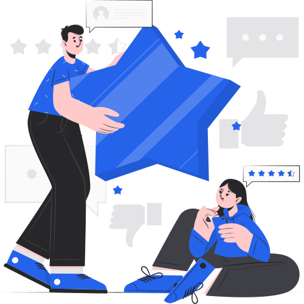
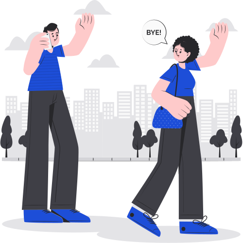

<title>Async Practice Walkthrough — Mobile</title>
<meta name="claude:viewport-fit-sides" content="cover">
<link rel="stylesheet" href="tessera/tokens.css">
<link rel="stylesheet" href="tessera/bundle.css">
<style>
/* End-to-end mobile flow for the Tessera async assessment (UX-1224): onboarding, the live
   assessment with sample questions, and the wrap-up, on Chrome for Android and Safari on iPhone.

   Layout concept: a scaled phone on a neutral stage. Inside it every screen is the same frame:
   the Tessera top bar, a scrolling body, and a fixed footer that holds every call to action at
   full width. Camera screens go full page, with the top bar and footer laid over the picture.

   Built on the real Tessera components (window.TesseraDS). Nothing here uses a colour or size
   that is not a Tessera token, except the simulated browser chrome, the browser's own permission
   dialogs, and the sample camera picture. The structure follows the approved wireframe; the V8
   Test Taker Experience and Proctoring Attendee frames are the style and layout reference.

   Light mode only: the app sits under data-theme="light", so a viewer's dark setting cannot flip
   the tokens. */
:root{ --stage-bg:#d4d4d8; color-scheme:light }
*,*::before,*::after{box-sizing:border-box}
html,body{height:100%}
body{margin:0;display:flex;flex-direction:row;font-family:var(--font-sans);font-size:14px;line-height:20px;color:var(--text-body);background:var(--stage-bg);-webkit-font-smoothing:antialiased}
#root{display:flex;flex:1;min-width:0;height:100%}
.app{display:flex;flex:1;min-width:0;height:100%}
.sr-only{position:absolute;width:1px;height:1px;overflow:hidden;clip:rect(0 0 0 0);clip-path:inset(50%);white-space:nowrap}

/* ---------- Stage and phone frame ---------- */
.stage{position:relative;flex:1;min-width:0;min-height:0;overflow:hidden;padding-block:16px;
  padding-left:max(16px,env(safe-area-inset-left,0px));padding-right:max(16px,env(safe-area-inset-right,0px))}
#phone{position:absolute;left:50%;top:50%;width:var(--pw);height:var(--ph);margin:calc(var(--ph) / -2) 0 0 calc(var(--pw) / -2);
  transform:scale(var(--k,1));transform-origin:50% 50%;background:#000;border-radius:38px;
  box-shadow:0 10px 50px rgba(0,0,0,.28),0 0 0 11px #18181b,0 0 0 12px #3f3f46;overflow:hidden}
#frame{position:absolute;inset:0;display:flex;flex-direction:column;background:var(--bg-surface);overflow:hidden}

/* Simulated browser chrome. Android matches the Figma frames (dark Chrome); iPhone draws Safari. */
.a-chrome{flex:none;background:#202124;color:#e8eaed;font:500 12px/1 var(--font-sans)}
.a-status{display:flex;align-items:center;justify-content:space-between;height:26px;padding:0 18px}
.a-url{display:flex;align-items:center;gap:8px;padding:2px 10px 8px}
.a-pill{flex:1;min-width:0;display:flex;align-items:center;gap:7px;height:34px;padding:0 12px;border-radius:999px;background:#3c4043;font:400 13px/1 var(--font-sans);overflow:hidden;white-space:nowrap;text-overflow:ellipsis}
.a-btn{flex:none;width:28px;height:28px;display:inline-flex;align-items:center;justify-content:center;color:#e8eaed}
.a-tabs{width:20px;height:20px;border:1.6px solid #e8eaed;border-radius:5px;display:inline-flex;align-items:center;justify-content:center;font:600 11px/1 var(--font-sans)}
.a-nav{flex:none;height:18px;background:var(--bg-surface);display:flex;align-items:center;justify-content:center}
.a-nav span{width:106px;height:4px;border-radius:2px;background:#18181b;opacity:.75}
.notch{position:absolute;top:9px;left:50%;transform:translateX(-50%);width:108px;height:27px;border-radius:999px;background:#000;z-index:3}
.i-status{flex:none;display:flex;align-items:flex-end;justify-content:space-between;height:46px;padding:0 24px 6px;background:var(--bg-surface);font:600 14px/1 var(--font-sans);color:var(--text-primary)}
.i-bottom{flex:none;background:var(--bg-surface);border-top:1px solid var(--border-subtle)}
.i-url{display:flex;align-items:center;gap:8px;padding:6px 10px}
.i-field{flex:1;min-width:0;display:flex;align-items:center;gap:7px;height:34px;padding:0 10px;border-radius:999px;background:var(--bg-elevated);font:400 12px/18px var(--font-sans);color:var(--text-body)}
.i-aa{font:500 15px/1 var(--font-sans);letter-spacing:-.02em;padding:0 4px;color:var(--text-primary)}
.i-aa b{font-size:11px;font-weight:500}
.i-home{height:22px;display:flex;align-items:flex-start;justify-content:center;padding-top:4px}
.i-home span{width:134px;height:5px;border-radius:3px;background:#18181b;opacity:.85}

/* ---------- The page frame: top bar, body, fixed footer ---------- */
#viewport{flex:1;min-height:0;position:relative;display:flex;flex-direction:column;background:var(--bg-surface)}
.topstack{flex:none;position:relative;z-index:6}
#view{flex:1;min-height:0;position:relative;display:flex;flex-direction:column}
/* Camera screens go full page: the picture runs behind the top bar and the footer. */
#viewport.camfull .topstack{position:absolute;top:0;left:0;right:0}
#viewport.camfull .topstack>header{background:rgba(255,255,255,.8);-webkit-backdrop-filter:blur(12px);backdrop-filter:blur(12px)}
#viewport.camfull #view{position:absolute;inset:0}

.pg{flex:1;min-height:0;display:flex;flex-direction:column;background:var(--bg-surface)}
.pg-body{flex:1;min-height:0;overflow:auto;padding:var(--space-4);display:flex;flex-direction:column;gap:var(--space-4)}
.pg-body.mid{justify-content:center}
/* The footer is fixed: it never scrolls away, and it holds every call to action at full width. */
.pg-foot{flex:none;display:grid;gap:var(--space-2);padding:var(--space-3) var(--space-4) var(--space-4);background:var(--bg-surface);border-top:1px solid var(--border-subtle)}
.pg-foot .note{margin:0;text-align:center}
.foot-link{display:flex;justify-content:center}
.head{display:grid;gap:var(--space-2)}
.head-row{display:flex;align-items:center;gap:var(--space-2)}
.head-row svg{flex:none;color:var(--success-strong)}
.head h1,.head p,.pg-body p{margin:0}
.ttl{margin:0;color:var(--text-primary)}
.ttl.err{color:var(--error-emphasis)}
.muted{color:var(--text-subtle)}
.centre{display:flex;flex-direction:column;align-items:center;gap:var(--space-3);text-align:center}
.mark{flex:none;width:48px;height:48px;border-radius:var(--radius-full);display:flex;align-items:center;justify-content:center;background:var(--bg-accent);color:var(--interactive-link)}
.mark.err{background:var(--error-surface);color:var(--error-emphasis)}
.steps{margin:0;padding-left:var(--space-5);display:grid;gap:var(--space-2);color:var(--text-body)}
.steps b{font-weight:500;color:var(--text-primary)}
.checklist{list-style:none;margin:0;padding:0;width:100%;text-align:left}
.checklist li{display:flex;align-items:center;gap:var(--space-3);padding:var(--space-2) 0;color:var(--text-primary)}
.checklist li.pend{color:var(--text-subtle)}
.checklist li.done svg{color:var(--success-strong)}
.dot{flex:none;width:16px;height:16px;border-radius:50%;border:1.5px solid var(--border-primary)}
.art{flex:none;display:flex;justify-content:center}
.art svg{display:block;width:100%;max-width:320px;height:auto}
.art img{display:block;width:100%;max-width:260px;height:auto}
.status-line{display:flex;align-items:flex-start;gap:var(--space-2);font:500 14px/20px var(--font-sans);color:var(--text-body)}
.status-line.ok{color:var(--success-strong)}
.status-line.late{color:var(--warning-emphasis)}
.status-line.bad{color:var(--error-emphasis)}
.status-line svg{flex:none;margin-top:2px}

/* ---------- Device rows ---------- */
.drows{display:grid;gap:var(--space-1)}
.drow{display:grid;grid-template-columns:20px minmax(0,1fr) auto;align-items:center;gap:var(--space-2)}
.drow>svg{color:var(--text-tertiary)}

/* ---------- Video: a card on light screens, a full page on camera screens ---------- */
.vcard{position:relative;flex:1;min-height:176px;border-radius:var(--radius-xl);overflow:hidden;background:var(--bg-tooltip)}
.vmedia{position:absolute;inset:0}
.vmedia.hidden{visibility:hidden}
.vmedia video,.vmedia canvas,.vmedia img{display:block;width:100%;height:100%;object-fit:cover}
.vmedia video.mirror{transform:scaleX(-1)}
.vmedia.frozen video,.vmedia.frozen img,.vmedia.frozen canvas{filter:grayscale(.55) brightness(.55)}
.vmsg{position:absolute;inset:0;display:flex;flex-direction:column;align-items:center;justify-content:center;gap:var(--space-2);padding:var(--space-6);text-align:center;color:var(--text-on-primary)}
.vtop{position:absolute;left:var(--space-3);right:var(--space-3);top:var(--space-3);display:flex;justify-content:space-between;align-items:center;gap:var(--space-2);z-index:2}
.pill{display:inline-flex;align-items:center;gap:var(--space-1);background:var(--bg-surface);border-radius:var(--radius-full);padding:0 var(--space-2);min-height:28px}
.pill .left{font:500 12px/18px var(--font-sans);color:var(--text-subtle)}
.livedot{display:inline-block;width:10px;height:10px;border-radius:50%;background:var(--error-strong);box-shadow:0 0 0 3px rgba(255,255,255,.55)}
.vstrip{position:absolute;left:0;right:0;bottom:0;z-index:2;display:flex;align-items:center;justify-content:space-between;gap:var(--space-3);padding:var(--space-2) var(--space-3);
  background:var(--bg-overlay-primary);color:var(--text-on-primary);
  --text-tertiary:var(--text-on-primary);--text-primary:var(--text-on-primary);--interactive-link:var(--blue-300)}
.vstrip .say{font:500 14px/20px var(--font-sans);min-width:0}
.vstrip .grp{display:flex;align-items:center;gap:var(--space-2);min-width:0}
.vcenter{position:absolute;inset:0;display:flex;align-items:center;justify-content:center;z-index:2;pointer-events:none}
.vcenter>*{pointer-events:auto}

/* Full-page camera: the picture fills the viewport; the footer and a floating card sit on top. */
.camlayer{position:absolute;inset:0;background:var(--bg-tooltip)}
.camtop{position:absolute;left:var(--space-3);right:var(--space-3);top:calc(var(--tsh,56px) + var(--space-3));display:flex;justify-content:space-between;align-items:center;gap:var(--space-2);z-index:4}
.camfoot{position:absolute;left:0;right:0;bottom:0;z-index:4;display:grid;gap:var(--space-3);padding:var(--space-10) var(--space-4) var(--space-4);
  background:linear-gradient(to top,rgba(24,24,27,.9) 45%,rgba(24,24,27,0))}
.float{background:var(--bg-surface);border-radius:var(--radius-xl);padding:var(--space-3) var(--space-4);box-shadow:var(--shadow-lg);display:grid;gap:var(--space-2)}
.float p{margin:0}
.wavebar{display:flex;align-items:center;justify-content:space-between;gap:var(--space-3);padding:var(--space-2) var(--space-3);border-radius:var(--radius-lg);background:var(--bg-muted);color:var(--text-primary)}
.qline{display:-webkit-box;-webkit-line-clamp:1;-webkit-box-orient:vertical;overflow:hidden;color:var(--text-primary)}

/* ---------- Questions ---------- */
.qmeta{display:flex;align-items:center;justify-content:space-between;color:var(--text-subtle)}
.qtext{margin:0;color:var(--text-primary)}
.infobox{background:var(--bg-muted);border:1px solid var(--border-subtle);border-radius:var(--radius-lg);padding:var(--space-3);display:grid;gap:var(--space-1)}
.infobox p{margin:0}
.clip{position:relative;flex:none;aspect-ratio:16/10;width:100%;border-radius:var(--radius-xl);overflow:hidden;background:var(--bg-tooltip)}
.clip canvas{position:absolute;inset:0;width:100%;height:100%;display:block}
.transcript{margin:0;padding:var(--space-3);background:var(--bg-muted);border-radius:var(--radius-lg);color:var(--text-body)}

/* The preparation countdown on the button: a darker blue fills left to right as the time runs out. */
@property --fill{syntax:'<percentage>';inherits:true;initial-value:0%}
.prepfill{--fill:0%;transition:--fill 1s linear}
.prepfill .ts-button--primary{background:linear-gradient(90deg,var(--interactive-click) var(--fill),var(--interactive-primary) var(--fill))}
.prepfill .ts-button--primary:hover:not(:disabled){background:linear-gradient(90deg,var(--interactive-click) var(--fill),var(--interactive-hover) var(--fill))}
.prepbar{display:grid;gap:var(--space-1)}

/* ---------- Wrap-up ---------- */
.bigscore{font:600 40px/48px var(--font-sans);color:var(--text-primary);margin:0}
.rrow{display:flex;align-items:center;justify-content:space-between;gap:var(--space-3);padding:var(--space-2) 0;border-top:1px solid var(--border-subtle)}
.rrow:first-child{border-top:0}
.rrow .l{display:grid;min-width:0}
.cert{border:2px solid var(--border-primary);border-radius:var(--radius-lg);padding:var(--space-4);text-align:center;background:var(--bg-muted);display:grid;gap:var(--space-1)}
.cert .t{font:600 20px/28px var(--font-sans);color:var(--text-primary)}
.rate{display:grid;grid-template-columns:repeat(5,minmax(0,1fr));gap:var(--space-1)}
.rate button{display:grid;justify-items:center;gap:2px;padding:var(--space-2) 2px;border:1px solid var(--border-subtle);border-radius:var(--radius-lg);background:var(--bg-surface);color:var(--text-body);font:400 11px/14px var(--font-sans);cursor:pointer}
.rate button .e{font-size:22px;line-height:28px}
.rate button[aria-checked="true"]{border-color:var(--interactive-link);background:var(--bg-accent);color:var(--interactive-link)}
.rate button:focus-visible{outline:2px solid var(--interactive-link);outline-offset:2px}
.tags{display:flex;flex-wrap:wrap;gap:var(--space-2)}
.skel{display:grid;gap:var(--space-3)}

/* ---------- The browser's own permission dialogs (not Tessera: drawn after the platform) ---------- */
.scrim{position:absolute;inset:0;z-index:50;display:flex;align-items:center;justify-content:center;padding:22px;background:rgba(0,0,0,.45)}
.dlg-site{width:100%;max-width:300px;background:#fff;border-radius:28px;padding:22px 22px 12px;box-shadow:0 16px 48px rgba(0,0,0,.3);color:#1f1f1f}
.dlg-site .ico{display:flex;gap:6px;color:#444746;margin-bottom:12px}
.dlg-site p{margin:0;font:400 16px/22px var(--font-sans)}
.dlg-site .acts{display:flex;justify-content:flex-end;gap:4px;margin-top:16px}
.dlg-site .acts button,.dlg-os .acts button{min-height:44px;padding:0 14px;border:0;border-radius:999px;background:none;color:#0b57d0;font:500 14px/1 var(--font-sans);cursor:pointer}
.dlg-site .acts button:hover,.dlg-os .acts button:hover{background:#e8f0fe}
.dlg-os{width:100%;max-width:300px;background:#fff;border-radius:28px;padding:24px 20px 10px;text-align:center;box-shadow:0 16px 48px rgba(0,0,0,.3);color:#1f1f1f}
.dlg-os .ico{margin:0 auto 16px;color:#444746;display:flex;justify-content:center}
.dlg-os p{margin:0;font:400 18px/24px var(--font-sans);text-wrap:balance}
.dlg-os p b{font-weight:500}
.dlg-os .acts{display:grid;margin-top:18px}
.dlg-os .acts button{min-height:52px;border-radius:12px}
.dlg-ios{width:272px;background:rgba(249,249,249,.97);border-radius:14px;overflow:hidden;text-align:center;box-shadow:0 20px 60px rgba(0,0,0,.3)}
.dlg-ios .body{padding:19px 16px 15px}
.dlg-ios strong{display:block;font:600 15px/20px var(--font-sans);color:#000}
.dlg-ios .acts{display:flex;border-top:1px solid rgba(60,60,67,.29)}
.dlg-ios .acts button{flex:1;min-height:44px;border:0;background:none;color:#0a7cff;font:400 17px/1 var(--font-sans);cursor:pointer}
.dlg-ios .acts button+button{border-left:1px solid rgba(60,60,67,.29);font-weight:600}
.dlg-note{margin:10px auto 0;max-width:300px;font:400 12px/18px var(--font-sans);color:rgba(255,255,255,.88);text-align:center}

/* ---------- Alvy: a full-page overlay under the top bar, closed with the X ---------- */
.alvy{position:absolute;inset:0;z-index:30;display:flex;flex-direction:column;background:var(--bg-surface)}
#viewport.camfull .alvy{top:var(--tsh,56px)}
.alvy>*{flex:1;min-height:0}

/* ---------- Prototype controls (not part of the design) ---------- */
.proto{flex:none;position:relative;z-index:70;width:300px;height:100%;overflow:auto;display:flex;flex-direction:column;background:var(--bg-surface);border-left:1px solid var(--border-subtle);color:var(--text-body)}
.proto-head,.proto-body{padding-left:var(--space-4);padding-right:max(var(--space-4),env(safe-area-inset-right,0px))}
.proto-head{display:flex;flex-wrap:wrap;align-items:center;justify-content:space-between;gap:var(--space-2);padding-top:max(var(--space-4),env(safe-area-inset-top,0px));padding-bottom:var(--space-3);border-bottom:1px solid var(--border-subtle)}
.proto-title{font:500 14px/20px var(--font-sans);color:var(--text-primary)}
.proto-ticket{flex-basis:100%;margin:0;color:var(--text-subtle)}
.proto-ticket b{font-weight:500;color:var(--text-primary)}
.proto-body{display:flex;flex-direction:column;gap:var(--space-5);padding-top:var(--space-4);padding-bottom:max(var(--space-4),env(safe-area-inset-bottom,0px))}
.proto.collapsed{width:auto}
.proto.collapsed .proto-body,.proto.collapsed .proto-ticket{display:none}
.proto-group{display:flex;flex-direction:column;gap:var(--space-2);width:100%}
.proto-label{font:500 12px/18px var(--font-sans);color:var(--text-subtle);text-transform:uppercase;letter-spacing:.04em}
.proto-group [role="tablist"]{width:100%}
.proto-group [role="tablist"]:not([aria-orientation="vertical"]){display:flex}
.proto-group [role="tablist"]:not([aria-orientation="vertical"]) [role="tab"]{flex:1;justify-content:center;padding-left:var(--space-2);padding-right:var(--space-2)}
.proto-actions{display:grid;gap:var(--space-2)}
@media (max-width:760px){
  body{flex-direction:column}
  .app{flex-direction:column}
  .proto{width:auto;height:auto;max-height:45%;border-left:0;border-top:1px solid var(--border-subtle)}
}
</style>

<div id="root" data-theme="light"></div>

<script src="https://unpkg.com/react@18.3.1/umd/react.production.min.js"></script>
<script src="https://unpkg.com/react-dom@18.3.1/umd/react-dom.production.min.js"></script>
<script src="https://unpkg.com/htm@3.1.1/dist/htm.umd.js"></script>
<script src="tessera/bundle.js"></script>
<script>
(() => {
  const { useState, useEffect, useRef, Fragment } = React;
  const DS = window.TesseraDS;
  const html = htm.bind(React.createElement);
  const { Button, IconButton, Icon, Spinner, Toggle, Dropdown, Chip, Tag, Tabs, TabList, Tab, TextLink, TextArea, Input, RadioGroup, Radio,
    CandidateTopNavigation, CandidateTimer, CandidateClock, CandidateSoundwave, CandidateBroadcastBanner, ProgressIndicator, SkeletonLoader, ChatPanel } = DS;

  /* Glyphs for the simulated browser chrome, the browser's own dialogs and the illustrations.
     Everything inside the product itself uses the Tessera Icon set. */
  const SVG = {
    lock:'<rect x="5" y="10" width="14" height="10" rx="2"/><path d="M8 10V7a4 4 0 0 1 8 0v3"/>',
    dots:'<circle cx="12" cy="5" r="1.4" fill="currentColor" stroke="none"/><circle cx="12" cy="12" r="1.4" fill="currentColor" stroke="none"/><circle cx="12" cy="19" r="1.4" fill="currentColor" stroke="none"/>',
    share:'<path d="M12 16V4M8 8l4-4 4 4M5 14v5a1 1 0 0 0 1 1h12a1 1 0 0 0 1-1v-5"/>',
    home:'<path d="M3 11l9-8 9 8M5 10v10h5v-6h4v6h5V10"/>',
    sig:'<path d="M2 20h.01M6 20v-4M11 20v-9M16 20V8M21 20V4"/>',
    batt:'<rect x="2" y="7" width="17" height="10" rx="2.5"/><path d="M22 11v2"/><rect x="4" y="9" width="11" height="6" rx="1" fill="currentColor" stroke="none"/>',
    video:'<path d="M15 10l4.553-2.276A1 1 0 0 1 21 8.618v6.764a1 1 0 0 1-1.447.894L15 14v-4z"/><rect x="3" y="6" width="12" height="12" rx="2"/>',
    mic:'<rect x="9" y="2" width="6" height="11" rx="3"/><path d="M5 10a7 7 0 0 0 14 0M8 21h8M12 17v4"/>',
    play:'<path d="M8 5.5v13l11-6.5z" fill="currentColor" stroke="none"/>'
  };
  const svg = (n, size = 16) => html`<svg width=${size} height=${size} viewBox="0 0 24 24" fill="none" stroke="currentColor" stroke-width="1.75" stroke-linecap="round" stroke-linejoin="round" aria-hidden="true" dangerouslySetInnerHTML=${{__html: SVG[n]}} />`;

  const PHONES = {android:{w:360, h:800}, ios:{w:390, h:844}};
  const SITE = 'cx-v2.talview.com';
  const CAMS = ['Front camera', 'Back camera'];
  const MICS = ['Phone microphone', 'AirPods Pro', 'Wired headset'];
  const WAIT_LABELS = ['Email verified', 'Loading your assessment', 'Preparing your questions'];
  const RESUME_LABELS = ['Email verified', 'Restoring your progress', 'Preparing your next question'];
  const TOTAL_SECS = 1200;       // the assessment timer: 20 minutes
  const NET_LOSS_MS = 15000;     // how long offline before the error screen (shortened for the prototype)

  /* ================= The questions =================
     Index 0 is the practice question, used in onboarding. The rest are the sample assessment.
     Written questions save when the candidate taps Next. A video answer saves the moment the
     recording stops. Anything still in progress when the page reloads is lost; everything
     already saved is kept. */
  const QS = [
    {id:'practice', kind:'video', practice:true, text:'Tell us about a project you’re proud of and what you learned from it.'},
    {id:'q1', kind:'mcq', skill:'Aptitude', text:'What is the next number in the sequence: 2, 4, 8, 16, ___?',
      options:['32', '24', '20', '46'], answer:'32'},
    {id:'q2', kind:'media', skill:'Comprehension', text:'Watch the clip, then answer: what is the main reason the speaker gives for the delay?',
      media:{len:24, caption:'Project update from Priya', transcript:'“Quick update on the dashboard. We’re two weeks behind, and the reason is simple: our data supplier missed their delivery deadline, so we couldn’t start the final testing. The team is fine and the budget is on track. We’ll ship as soon as the data arrives.”'},
      options:['A supplier missed a deadline', 'The team ran out of budget', 'A requirement changed late', 'The release was cancelled'], answer:'A supplier missed a deadline'},
    {id:'q3', kind:'video', skill:'Behavioral', text:'Share a story where you were able to bounce back from a challenge that was crucial to your success in learning a skill or concept.'},
    {id:'q4', kind:'mcq', skill:'Problem solving', text:'Solve for x in the equation 2x + 3 = 7.',
      options:['x = 1', 'x = 2', 'x = 3', 'x = 4'], answer:'x = 2'}
  ];
  const ASSESS = QS.slice(1);

  /* ================= Saved progress =================
     What survives a reload: onboarding done, the answers already saved, where the candidate is
     and the time left. Kept in sessionStorage where the viewer allows it, in memory otherwise. */
  const KEY = 'tessera-async-proto-v2';
  const BLANK = () => ({onboarded:false, qi:1, answers:{}, timeLeft:TOTAL_SECS, finished:false});
  const loadP = () => { try { const j = sessionStorage.getItem(KEY); if (j) return {...BLANK(), ...JSON.parse(j)}; } catch (e){} return BLANK(); };
  let P = loadP();
  const saveP = () => { try { sessionStorage.setItem(KEY, JSON.stringify(P)); } catch (e){} };
  const resetP = () => { P = BLANK(); try { sessionStorage.removeItem(KEY); } catch (e){} };

  /* ================= State =================
     One mutable store, rendered by React. Media elements are children of components that stay
     mounted across repaints, so a repaint cannot replace the canvas the recorder reads. */
  const S = {
    state:'wait', platform:'android',
    dialog:null, askFrom:null, blockedFrom:null, osGranted:false,
    permMode:'ask', voiceMode:'heard', loadMode:'ok', netMode:'online', online:navigator.onLine !== false, saveMode:'ok',
    wasOffline:false, backOnline:false, retryFail:false, neterrKind:'lost',
    save:'saving',
    permitted:false, blockedReason:'denied', inuseCleared:false,
    heard:false, micFailed:false, recording:false, hidePreview:false,
    interruptReason:'away', keptSecs:0, takeSecs:0, pendingInterrupt:false, lastFrame:null, reviewKept:false,
    qi:0, sel:{}, transcript:false, qExpanded:false,
    prepSecs:15, prepLeft:15, prepStyle:'button', limitSecs:120,
    assessing:false, timeLeft:TOTAL_SECS, resuming:false, restoreNote:false,
    saveStep:0, fb:{rating:null, liked:[], text:''},
    alvyOpen:false, alvyMsgs:[], alvyTyping:false,
    recSecs:0, cam:0, mic:0, count:5, waitItems:['done', 'act', 'pend'],
    stream:null, audioCtx:null, analyser:null, abuf:null, level:0, realFailed:false,
    recorder:null, chunks:[], clipURL:null, poster:null, replayOK:false,
    protoCollapsed:false
  };
  let bump = () => {};
  const render = () => bump();
  const Q = () => QS[S.qi];

  let timers = [], intervals = [];
  const later = (fn, ms) => timers.push(setTimeout(fn, ms));
  const every = (fn, ms) => intervals.push(setInterval(fn, ms));
  const clearTimers = () => { timers.forEach(clearTimeout); intervals.forEach(clearInterval); timers = []; intervals = []; };
  const fmt = s => String(Math.floor(s / 60)).padStart(2, '0') + ':' + String(s % 60).padStart(2, '0');

  const showPreview = () => (S.state === 'test' || S.state === 'record') && S.permitted;
  const KEEP_CLIP = ['review', 'interrupted'];   // states that must not throw the take away
  const NO_CAMERA = ['wait', 'neterror', 'permission', 'blocked', 'otherdevice', 'interrupted', 'countdown', 'finish', 'saving', 'score', 'feedback', 'thanks'];
  const online = () => S.netMode === 'offline' ? false : S.online;
  const BROWSER = () => S.platform === 'ios' ? 'Safari' : 'Chrome';

  function go(next){
    clearTimers();
    stopRecorder(true);
    S.state = next;
    S.recording = next === 'record';   // the camera screen records: it starts when it mounts
    S.dialog = null;
    S.pendingInterrupt = false;
    S.qExpanded = false;
    if (!KEEP_CLIP.includes(next)) dropClip();
    if (next === 'wait') S.waitItems = ['done', 'act', 'pend'];
    if (next === 'test'){ S.heard = false; S.micFailed = false; }
    if (next === 'question'){ S.prepLeft = S.prepSecs; S.transcript = false; }
    if (next === 'record'){ S.recSecs = 0; S.hidePreview = false; S.lastFrame = null; }
    if (next === 'countdown') S.count = 5;
    if (next === 'saving') S.saveStep = 0;
    if (NO_CAMERA.includes(next)) stopStream();
    render();
    enter(next);
  }

  function enter(st){
    if (st === 'wait'){
      // Prototype stand-in: production drives these from real loading milestones.
      later(() => {
        if (S.loadMode === 'fail'){ S.neterrKind = 'load'; go('neterror'); return; }
        S.waitItems = ['done', 'done', 'act']; render();
      }, 1400);
      later(() => { S.waitItems = ['done', 'done', 'done']; render(); }, 2600);
      later(afterLoad, 3200);
    }
    if (st === 'test'){
      if (canUseCamera() && !S.stream) acquire().catch(() => {});
      startLevel();
      if (S.voiceMode === 'heard' && !S.analyser) later(micOk, 2600);
      later(() => { if (!S.heard) micNone(); }, 7000);
    }
    if (st === 'question'){
      // A video question in the real assessment gives preparation time, then records by itself.
      const q = Q();
      if (q.kind === 'video' && !q.practice){
        every(() => {
          S.prepLeft = Math.max(0, S.prepLeft - 1);   // never below zero, even if a dialog is holding the start
          if (S.prepLeft <= 0){ startRecordFlow(); return; }
          render();
        }, 1000);
      }
    }
    if (st === 'review') startSave();
    if (st === 'countdown'){
      every(() => {
        S.count--;
        if (S.count <= 0){ beginAssessment(); return; }
        render();
      }, 1000);
    }
    if (st === 'saving'){
      P.finished = true; saveP();
      later(() => { S.saveStep = 1; render(); }, 1100);
      later(() => { S.saveStep = 2; render(); }, 2300);
      later(() => { S.saveStep = 3; render(); }, 3300);
      later(() => go('score'), 4100);
    }
  }

  // After loading: a first visit goes to onboarding; a reload goes straight back to the question.
  function afterLoad(){
    if (P.finished){ go('thanks'); return; }
    if (P.onboarded){
      S.assessing = true; S.timeLeft = P.timeLeft; startAssessTimer();
      if (P.qi >= QS.length){ go('finish'); return; }
      S.qi = P.qi; go('question'); return;
    }
    S.qi = 0; go('permission');
  }
  function beginAssessment(){
    P.onboarded = true; P.qi = 1; P.timeLeft = TOTAL_SECS; saveP();
    S.assessing = true; S.timeLeft = TOTAL_SECS; S.qi = 1;
    startAssessTimer();
    go('question');
  }

  /* ---------- The assessment timer ---------- */
  let assessIv = null;
  function startAssessTimer(){
    clearInterval(assessIv);
    assessIv = setInterval(() => {
      if (!S.assessing) return;
      S.timeLeft = Math.max(0, S.timeLeft - 1);
      P.timeLeft = S.timeLeft;
      if (S.timeLeft % 5 === 0) saveP();
      if (S.timeLeft <= 0){ clearInterval(assessIv); S.assessing = false; go('saving'); return; }
      render();
    }, 1000);
  }
  function stopAssessTimer(){ clearInterval(assessIv); }

  /* ---------- Moving through the questions ---------- */
  function nextQuestion(){
    const q = Q();
    if (q.kind !== 'video') P.answers[q.id] = {value: S.sel[q.id] ?? P.answers[q.id]?.value};   // saved on Next
    S.restoreNote = false;   // the welcome-back note has done its job once they move on
    if (S.qi >= QS.length - 1){ P.qi = QS.length; saveP(); go('finish'); return; }
    S.qi++; P.qi = S.qi; saveP();
    go('question');
  }
  function finishAssessment(){ S.assessing = false; stopAssessTimer(); go('saving'); }

  // Start the camera screen. After a reload the page has no camera yet, so ask first.
  function startRecordFlow(){
    if (S.dialog) return;
    if (!S.permitted){ askPermission(); return; }
    go('record');
  }

  /* ---------- Permission: the screen primes it, the platform asks ---------- */
  function askPermission(){
    S.askFrom = S.state;
    if (S.dialog) return;
    if (S.permMode === 'granted'){ return granted(); }
    if (canUseCamera()){
      // A real camera is reachable (the file opened directly in a browser): let the real
      // browser ask, so what the candidate sees is genuinely their own prompt.
      acquire().then(stream => {
        if (!stream || S.state !== S.askFrom) return;
        granted();
      }).catch(err => {
        if (S.state !== S.askFrom || err?.stale) return;
        if (err?.fallback){ S.dialog = 'site'; return render(); }
        S.blockedReason = (err.name === 'NotReadableError' || err.name === 'AbortError') ? 'inuse' : 'denied';
        S.permitted = S.blockedReason === 'inuse';
        S.blockedFrom = S.askFrom;
        go('blocked');
      });
      return;
    }
    S.dialog = 'site';
    render();
  }
  // Chrome asks the OS only once the site itself is allowed, and Android asks for camera and
  // microphone one at a time.
  function dialogAllow(){
    if (S.dialog === 'site'){
      if (S.platform === 'android' && !S.osGranted){ S.dialog = 'os-cam'; return render(); }
      S.dialog = null; S.permitted = true; return granted();
    }
    if (S.dialog === 'os-cam'){ S.dialog = 'os-mic'; return render(); }
    S.dialog = null; S.osGranted = true; S.permitted = true; granted();
  }
  function dialogDeny(){
    const atOS = S.dialog !== 'site';
    S.dialog = null;
    S.permitted = false;
    S.blockedReason = atOS ? 'os' : 'denied';
    S.blockedFrom = S.askFrom;
    go('blocked');
  }
  function granted(){
    if (S.permMode === 'inuse' && !S.inuseCleared){ S.blockedReason = 'inuse'; S.permitted = true; S.blockedFrom = S.askFrom; return go('blocked'); }
    S.permitted = true;
    const from = S.askFrom; S.askFrom = null;
    go(from === 'question' ? 'record' : 'test');
  }
  function retryBlocked(){
    S.inuseCleared = true; S.permitted = false;
    go(S.blockedFrom === 'question' ? 'question' : 'permission');
  }

  /* ---------- Interruption: the half of mobile the happy path never shows ----------
     A call, a notification the candidate taps, the screen locking, switching apps: all of them
     suspend the page and end the camera track. Carrying on drawing a running timer over a dead
     stream is the worst available answer, so stop, keep the take, and say what was kept. */
  function interrupt(reason){
    if (S.state !== 'record' || !S.recording) return;
    S.interruptReason = reason;
    S.keptSecs = S.recSecs;
    S.poster = grabPoster() || S.lastFrame;
    stopRecorder(false);
    go('interrupted');
  }
  document.addEventListener('visibilitychange', () => {
    if (document.hidden){
      // Capture the take now: once we are hidden there is nothing left to read a frame from.
      if (S.state === 'record' && S.recording){
        S.interruptReason = 'away';
        S.keptSecs = S.recSecs;
        S.poster = grabPoster() || S.lastFrame;
        stopRecorder(false);
        S.recording = false;
        S.pendingInterrupt = true;
      }
      return;
    }
    if (S.pendingInterrupt){ S.pendingInterrupt = false; go('interrupted'); }
  });
  // A track ends or mutes when something else claims the device, typically a phone call.
  function watchTracks(stream){
    stream.getTracks().forEach(t => {
      const lost = () => interrupt('device');
      t.addEventListener('ended', lost);
      t.addEventListener('mute', lost);
    });
  }

  /* ---------- Saving: stop recording saves the answer, with no upload step ----------
     That is the right design and it carries one risk: a write that stalls is silent, so the
     candidate walks on to the next question with this one still in flight. The cure is holding
     Next until the write has landed. */
  let saveToken = 0;
  function startSave(){
    const tok = ++saveToken;
    S.save = 'saving';
    render();
    const landed = () => {
      const q = Q();
      if (q.kind === 'video' && !q.practice){ P.answers[q.id] = {saved:true}; saveP(); }
      S.save = 'saved'; render();
    };
    later(() => {
      if (tok !== saveToken || S.state !== 'review') return;
      if (!online()){ S.save = 'retry'; return render(); }   // held until the connection returns
      if (S.saveMode === 'ok') return landed();
      S.save = 'retry';
      render();
      later(() => {
        if (tok !== saveToken || S.state !== 'review') return;
        if (S.saveMode === 'fail' || !online()){ S.save = 'failed'; render(); } else landed();
      }, 3200);
    }, S.netMode === 'poor' ? 2600 : 1500);
  }

  /* ---------- Network ----------
     A short drop shows a broadcast banner and carries on. A long one replaces the page with an
     error screen, and Retry reloads: the saved answers and onboarding survive, the answer that
     was in progress does not. */
  let netTimer = null, backTimer = null;
  function netChanged(){
    clearTimeout(netTimer);
    if (!online()){
      S.wasOffline = true; S.backOnline = false;
      netTimer = setTimeout(() => {
        if (!online() && !['neterror', 'wait'].includes(S.state)){ S.neterrKind = 'lost'; S.retryFail = false; go('neterror'); }
      }, NET_LOSS_MS);
    } else if (S.wasOffline){
      S.wasOffline = false; S.backOnline = true;
      clearTimeout(backTimer);
      backTimer = setTimeout(() => { S.backOnline = false; render(); }, 4000);
    }
    render();
    if (S.state === 'review' && online() && (S.save === 'retry' || S.save === 'failed')) startSave();
  }
  addEventListener('online', () => { S.online = true; netChanged(); });
  addEventListener('offline', () => { S.online = false; netChanged(); });

  function dropConnection(){ S.netMode = 'offline'; S.wasOffline = true; S.neterrKind = 'lost'; S.retryFail = false; go('neterror'); }
  function retryNet(){
    if (!online()){ S.retryFail = true; render(); return; }
    S.retryFail = false;
    if (S.neterrKind === 'load'){ S.loadMode = 'ok'; go('wait'); return; }
    reloadResume();
  }
  // A reload: the page forgets everything in memory, then rebuilds from what was saved.
  function reloadResume(){
    stopStream(); dropClip();
    S.sel = {}; S.permitted = false; S.dialog = null; S.alvyOpen = false;
    S.resuming = P.onboarded; S.restoreNote = P.onboarded && !P.finished;
    go('wait');
  }
  function resetProgress(){
    resetP(); stopAssessTimer(); stopStream(); dropClip();
    Object.assign(S, {assessing:false, timeLeft:TOTAL_SECS, qi:0, sel:{}, resuming:false, restoreNote:false, permitted:false, fb:{rating:null, liked:[], text:''}, alvyOpen:false, alvyMsgs:[]});
    go('wait');
  }

  /* ---------- Mic gate: Continue unlocks when we hear something ---------- */
  function micOk(){ if (S.heard || S.state !== 'test') return; S.heard = true; S.micFailed = false; render(); }
  function micNone(){ if (S.heard || S.state !== 'test') return; S.micFailed = true; render(); }
  function simSpeech(){
    const t = performance.now() / 1000;
    const talking = (Math.sin(t * 1.7) + Math.sin(t * 0.63)) > -0.9;
    return talking ? Math.min(1, 0.25 + 0.75 * Math.abs(Math.sin(t * 10.5 + Math.sin(t * 3.1) * 2))) : 0.03;
  }
  function realLevel(){
    S.analyser.getByteTimeDomainData(S.abuf);
    let sum = 0;
    for (const v of S.abuf){ const d = (v - 128) / 128; sum += d * d; }
    return Math.min(1, Math.sqrt(sum / S.abuf.length) * 5);
  }
  function startLevel(){
    let loud = 0;
    every(() => {
      S.level = S.voiceMode === 'silent' ? 0 : S.analyser ? realLevel() : simSpeech();
      if (!S.heard && S.analyser && S.voiceMode === 'heard' && S.state === 'test'){
        loud = S.level > 0.12 ? loud + 80 : Math.max(0, loud - 40);
        if (loud >= 600) micOk();
      }
    }, 80);
  }

  /* ================= Camera ================= */
  const canUseCamera = () => {
    if (S.realFailed || !window.isSecureContext || !navigator.mediaDevices?.getUserMedia) return false;
    const policy = document.permissionsPolicy || document.featurePolicy;
    return policy?.allowsFeature ? policy.allowsFeature('camera') : true;
  };
  let acquireToken = 0;
  function acquire(){
    const tok = ++acquireToken, t0 = performance.now();
    return navigator.mediaDevices.getUserMedia({video:true, audio:true}).then(stream => {
      if (tok !== acquireToken){ stream.getTracks().forEach(t => t.stop()); return null; }
      S.stream = stream;
      setupAudio(stream);
      watchTracks(stream);
      render();
      return stream;
    }, err => {
      if (tok !== acquireToken) throw {stale:true};
      // An instant refusal means this frame cannot use the camera at all (an embedded viewer,
      // say): fall back to the drawn sample preview and the simulated dialogs.
      if ((err.name === 'NotAllowedError' && performance.now() - t0 < 250) || err.name === 'SecurityError' || err.name === 'TypeError'){
        S.realFailed = true;
        throw {fallback:true};
      }
      throw err;
    });
  }
  function setupAudio(stream){
    try {
      if (!stream.getAudioTracks().length) return;
      const AC = window.AudioContext || window.webkitAudioContext;
      S.audioCtx = new AC();
      const an = S.audioCtx.createAnalyser();
      an.fftSize = 512;
      S.audioCtx.createMediaStreamSource(stream).connect(an);
      S.analyser = an;
      S.abuf = new Uint8Array(an.fftSize);
      S.audioCtx.resume?.();
    } catch (e){ S.analyser = null; }
  }
  function stopStream(){
    acquireToken++;
    S.stream?.getTracks().forEach(t => t.stop());
    try { S.audioCtx?.close(); } catch (e){}
    S.stream = null; S.audioCtx = null; S.analyser = null;
  }

  /* ---------- Recording the clip, so the candidate can watch it back ----------
     The device check only proves the live preview works. Playing the clip back is the only
     proof the RECORDING captured them. Where MediaRecorder is missing or refuses the source,
     we keep the last frame instead and say playback is unavailable. */
  let simCanvasEl = null;
  function recorderSource(){
    if (S.stream) return S.stream;
    try { return simCanvasEl?.captureStream ? simCanvasEl.captureStream(30) : null; } catch (e){ return null; }
  }
  function startRecorder(){
    S.chunks = []; S.replayOK = false;
    const src = recorderSource();
    if (!src || !window.MediaRecorder) return;
    try {
      const type = ['video/mp4', 'video/webm;codecs=vp9', 'video/webm'].find(t => MediaRecorder.isTypeSupported?.(t));
      const mime = type || 'video/webm';
      const rec = new MediaRecorder(src, type ? {mimeType:type} : undefined);
      rec.ondataavailable = e => { if (e.data && e.data.size) S.chunks.push(e.data); };
      rec.onstop = () => {
        if (!S.chunks.length) return;
        S.clipURL = URL.createObjectURL(new Blob(S.chunks, {type:mime}));
        S.replayOK = true;
        render();
      };
      S.recorder = rec;
      rec.start();
    } catch (e){ S.recorder = null; }
  }
  function stopRecorder(discard){
    try { if (S.recorder && S.recorder.state !== 'inactive') S.recorder.stop(); } catch (e){}
    if (discard) S.recorder = null;
  }
  function dropClip(){
    if (S.clipURL){ URL.revokeObjectURL(S.clipURL); S.clipURL = null; }
    S.replayOK = false; S.poster = null; S.chunks = [];
  }
  // A still of the last frame, used when playback is not available in this frame.
  function grabPoster(){
    const src = document.getElementById('liveVideo') || document.getElementById('simCam');
    if (!src) return null;
    const sw = src.videoWidth || src.width, sh = src.videoHeight || src.height;
    if (!sw || !sh) return null;
    try {
      const cv = document.createElement('canvas');
      cv.width = 360; cv.height = 640;
      const ctx = cv.getContext('2d');
      const scale = Math.max(cv.width / sw, cv.height / sh);
      const w = sw * scale, h = sh * scale;
      if (src.tagName === 'VIDEO'){ ctx.translate(cv.width, 0); ctx.scale(-1, 1); }
      ctx.drawImage(src, (cv.width - w) / 2, (cv.height - h) / 2, w, h);
      return cv.toDataURL('image/jpeg', 0.82);
    } catch (e){ return null; }
  }
  // The clock for the camera screen. A video question has a time limit and stops itself;
  // it also keeps a recent frame in hand, because an interruption gives no warning.
  function runRecClock(){
    every(() => {
      S.recSecs++;
      if (S.recSecs % 2 === 0) S.lastFrame = grabPoster() || S.lastFrame;
      if (!Q().practice && S.recSecs >= S.limitSecs){ endRecording(); return; }
      render();
    }, 1000);
  }
  function endRecording(){
    S.reviewKept = false;
    S.takeSecs = S.recSecs;
    S.poster = grabPoster() || S.lastFrame;
    stopRecorder(false);
    clearTimers();
    S.recording = false;
    go('review');
  }

  /* Sample preview for viewers whose frame blocks the camera: a drawn person who sways,
     blinks and talks in time with the level. Scaled like object-fit:cover. */
  const reduce = matchMedia('(prefers-reduced-motion: reduce)');
  let simRaf = 0;
  function startSim(c){
    cancelAnimationFrame(simRaf);
    simCanvasEl = c;
    const ctx = c.getContext('2d');
    const t0 = performance.now();
    // A new canvas starts at 300x150, so "has a size" tells us nothing: track it.
    let sized = false;
    const paint = now => {
      const dpr = Math.min(window.devicePixelRatio || 1, 2), w = c.clientWidth, h = c.clientHeight;
      if (!w || !h) return false;
      // Size it once, then hold that size for the whole take: captureStream() encodes the
      // backing store, and an encoder whose resolution changes part-way produces a broken clip.
      if ((!sized || !S.recording) && (c.width !== Math.round(w * dpr) || c.height !== Math.round(h * dpr))){
        c.width = Math.round(w * dpr); c.height = Math.round(h * dpr);
      }
      sized = true;
      ctx.setTransform(dpr, 0, 0, dpr, 0, 0);
      drawPerson(ctx, c.width / dpr, c.height / dpr, (now - t0) / 1000, S.level);
      return true;
    };
    const frame = now => {
      if (!c.isConnected) return;
      if (!paint(now)){ simRaf = requestAnimationFrame(frame); return; }
      if (!reduce.matches) simRaf = requestAnimationFrame(frame);
    };
    // Size and paint once right now, so the recorder never starts on an unsized canvas.
    paint(performance.now());
    simRaf = requestAnimationFrame(frame);
  }
  function stopSim(c){
    cancelAnimationFrame(simRaf);
    if (simCanvasEl === c) simCanvasEl = null;
  }
  function drawPerson(ctx, w, h, t, level){
    const u = Math.max(w / 612, h / 443) * 0.92;
    const wall = ctx.createLinearGradient(0, 0, 0, h);
    wall.addColorStop(0, '#6b625a'); wall.addColorStop(1, '#433d38');
    ctx.fillStyle = wall; ctx.fillRect(0, 0, w, h);
    const glow = ctx.createRadialGradient(w * .92, h * .2, 10, w * .92, h * .2, w * .9);
    glow.addColorStop(0, 'rgba(255,236,205,.42)'); glow.addColorStop(1, 'rgba(255,236,205,0)');
    ctx.fillStyle = glow; ctx.fillRect(0, 0, w, h);
    ctx.fillStyle = '#4f4740'; ctx.fillRect(w * .04, h * .1, 92 * u, 70 * u);
    ctx.fillStyle = '#7d8c87'; ctx.fillRect(w * .04 + 6 * u, h * .1 + 6 * u, 80 * u, 58 * u);

    const cx = w / 2 + Math.sin(t * .6) * 6 * u, cy = h * .42 + Math.sin(t * .9) * 3 * u;
    ctx.save();
    ctx.translate(cx, cy); ctx.rotate(Math.sin(t * .5) * .03);
    ctx.fillStyle = '#2f4a6b';
    ctx.beginPath();
    ctx.moveTo(-210 * u, h);
    ctx.bezierCurveTo(-200 * u, 140 * u, -120 * u, 118 * u, -40 * u, 112 * u);
    ctx.lineTo(40 * u, 112 * u);
    ctx.bezierCurveTo(120 * u, 118 * u, 200 * u, 140 * u, 210 * u, h);
    ctx.closePath(); ctx.fill();
    ctx.fillStyle = '#b97f5d';
    ctx.beginPath(); ctx.ellipse(0, 100 * u, 30 * u, 36 * u, 0, 0, Math.PI * 2); ctx.fill();
    ctx.fillStyle = '#2f4a6b';
    ctx.beginPath(); ctx.moveTo(-44 * u, 112 * u); ctx.quadraticCurveTo(0, 150 * u, 44 * u, 112 * u); ctx.lineTo(44 * u, 140 * u); ctx.lineTo(-44 * u, 140 * u); ctx.fill();
    ctx.fillStyle = '#d29c78';
    ctx.beginPath(); ctx.ellipse(0, 0, 62 * u, 78 * u, 0, 0, Math.PI * 2); ctx.fill();
    ctx.beginPath(); ctx.ellipse(-62 * u, 8 * u, 10 * u, 16 * u, 0, 0, Math.PI * 2); ctx.ellipse(62 * u, 8 * u, 10 * u, 16 * u, 0, 0, Math.PI * 2); ctx.fill();
    const light = ctx.createRadialGradient(24 * u, -24 * u, 4 * u, 24 * u, -24 * u, 90 * u);
    light.addColorStop(0, 'rgba(255,230,205,.35)'); light.addColorStop(1, 'rgba(255,230,205,0)');
    ctx.fillStyle = light; ctx.beginPath(); ctx.ellipse(0, 0, 62 * u, 78 * u, 0, 0, Math.PI * 2); ctx.fill();
    ctx.fillStyle = '#2b201b';
    ctx.beginPath();
    ctx.ellipse(0, -30 * u, 68 * u, 56 * u, 0, Math.PI, Math.PI * 2);
    ctx.quadraticCurveTo(40 * u, -50 * u, 0, -46 * u);
    ctx.quadraticCurveTo(-40 * u, -44 * u, -68 * u, -30 * u);
    ctx.fill();
    ctx.strokeStyle = '#2b201b'; ctx.lineWidth = 4 * u; ctx.lineCap = 'round';
    ctx.beginPath(); ctx.moveTo(-34 * u, -24 * u); ctx.lineTo(-14 * u, -26 * u); ctx.moveTo(14 * u, -26 * u); ctx.lineTo(34 * u, -24 * u); ctx.stroke();
    const blink = (t % 4.2) < .14;
    ctx.fillStyle = '#2b201b';
    ctx.beginPath(); ctx.ellipse(-24 * u, -8 * u, 6 * u, blink ? 1 * u : 6 * u, 0, 0, Math.PI * 2); ctx.ellipse(24 * u, -8 * u, 6 * u, blink ? 1 * u : 6 * u, 0, 0, Math.PI * 2); ctx.fill();
    ctx.strokeStyle = 'rgba(120,70,45,.55)'; ctx.lineWidth = 3 * u;
    ctx.beginPath(); ctx.moveTo(0, -2 * u); ctx.quadraticCurveTo(-6 * u, 14 * u, 2 * u, 18 * u); ctx.stroke();
    ctx.fillStyle = '#7a3b32';
    ctx.beginPath(); ctx.ellipse(0, 40 * u, 15 * u, 2.5 * u + level * 9 * u, 0, 0, Math.PI * 2); ctx.fill();
    ctx.restore();
    const vig = ctx.createRadialGradient(w / 2, h / 2, h * .35, w / 2, h / 2, h * .95);
    vig.addColorStop(0, 'rgba(0,0,0,0)'); vig.addColorStop(1, 'rgba(0,0,0,.45)');
    ctx.fillStyle = vig; ctx.fillRect(0, 0, w, h);
  }


  /* ================= Recovery copy ================= */
  const SITE_STEPS = {
    android:['Tap the lock icon at the left of the address bar, at the top of the screen.', 'Tap <b>Permissions</b>.', 'Turn on <b>Camera</b> and <b>Microphone</b>.', 'Come back here and tap <b>Retry</b>.'],
    ios:['Tap <b>aA</b> in the address bar, at the bottom of the screen.', 'Tap <b>Website Settings</b>.', 'Set <b>Camera</b> and <b>Microphone</b> to <b>Allow</b>.', 'Tap <b>Done</b>, then <b>Retry</b> here.']
  };
  const OS_STEPS = ['Open your phone’s <b>Settings</b>.', 'Go to <b>Apps › Chrome › Permissions</b>.', 'Allow <b>Camera</b> and <b>Microphone</b>.', 'Come back here and tap <b>Retry</b>.'];
  const INUSE_STEPS = ['Close any app using your camera: a video call, the camera app, or a recorder.', 'Swipe it away so it fully quits, not just goes to the background.', 'Tap <b>Retry</b>.'];
  const NET_STEPS = ['Check that Wi-Fi or mobile data is on.', 'Move closer to your router, or switch between Wi-Fi and mobile data.', 'Tap <b>Retry</b>. Your saved answers are kept.'];
  // The same three blocked states the Proctoring Attendee screens cover, in their words.
  function blockedCopy(){
    if (S.blockedReason === 'inuse') return {
      title:'Your camera is in use', art:'inuse', topic:'inuse', link:'How to free up your camera',
      text:'Another app on your phone is using the camera. Close it, then retry.'
    };
    if (S.blockedReason === 'os') return {
      title:'Chrome needs camera access', art:'blocked', topic:'blocked', link:'How to allow camera and microphone permissions?',
      text:'You allowed this site, but Chrome itself can’t use your camera and microphone yet. Open Settings › Apps › Chrome › Permissions, allow both, and retry.'
    };
    return {
      title:'Camera & microphone blocked', art:'blocked', topic:'blocked', link:'How to allow camera and microphone permissions?',
      text: S.platform === 'ios'
        ? 'We need your camera and microphone access to continue. Tap aA in the address bar, open Website Settings, allow both and retry.'
        : 'We need your camera and microphone access to continue. Tap the lock icon next to the address, allow both and retry.'
    };
  }

  /* ================= Chat with Alvy ================= */
  const nowTime = () => new Date().toLocaleTimeString([], {hour:'numeric', minute:'2-digit'});
  let msgId = 0, chatTimers = [];
  function pushMsg(m){ S.alvyMsgs = [...S.alvyMsgs, {id:'m' + (++msgId), time:nowTime(), ...m}]; render(); }
  function openAlvy(){
    S.alvyOpen = true;
    if (!S.alvyMsgs.length) pushMsg({from:'agent', author:'Alvy', children:'Need help? Type your question or describe the issue, and I’ll instantly find the right steps or guide you to support.'});
    else render();
  }
  function closeAlvy(){ S.alvyOpen = false; render(); }
  // Help-centre articles Alvy summarises (prototype copy; the real articles need confirming).
  function article(topic){
    const name = BROWSER();
    if (topic === 'blocked') return {
      ask:`Hi, my camera and microphone are blocked in ${name} on my phone. Can you help?`,
      search:`${name} permission steps on mobile`,
      title:`Allowing camera and microphone in ${name}`,
      steps:[...(S.blockedReason === 'os' ? OS_STEPS : SITE_STEPS[S.platform]),
        S.platform === 'ios' ? 'Still blocked? Check <b>Settings › Safari › Camera</b> is set to Ask or Allow.' : 'Still blocked? Check <b>Settings › Apps › Chrome › Permissions</b> on your phone.']
    };
    if (topic === 'inuse') return {
      ask:'Hi, it says my camera is being used by another app. Can you help?',
      search:'camera troubleshooting steps',
      title:'Fixing “Camera in use”',
      steps:[...INUSE_STEPS, 'Still not working? Restart your phone and open the link again.']
    };
    if (topic === 'net') return {
      ask:'Hi, the page says it couldn’t load and to check my connection. Can you help?',
      search:'connection problems during an assessment',
      title:'When the page can’t load',
      steps:[...NET_STEPS, 'Your timer keeps running while you reconnect, and answers you already saved are kept.']
    };
    return {
      ask:'Hi, you can’t hear my microphone. Can you help?',
      search:'microphone troubleshooting steps',
      title:'Fixing “Microphone not detected”',
      steps:['Choose a different microphone from the list on the screen.', 'Check your phone isn’t muted and nothing is covering the mic.', 'Unplug your headset and try the phone microphone instead.', `Make sure ${name} can use your microphone in your phone’s settings.`]
    };
  }
  function helpFlow(topic){
    openAlvy();
    chatTimers.forEach(clearTimeout); chatTimers = [];
    const t = (fn, ms) => chatTimers.push(setTimeout(fn, ms));
    const ar = article(topic);
    t(() => pushMsg({from:'sent', children:ar.ask}), 500);
    t(() => pushMsg({from:'agent', author:'Alvy', children:html`<${Fragment}>Absolutely, let me help you fix that.<br />I’m checking our help center for ${ar.search}.<//>`}), 1300);
    t(() => { S.alvyTyping = true; render(); }, 2000);
    t(() => {
      S.alvyTyping = false;
      pushMsg({from:'agent', author:'Alvy', children:html`<div>I found an article that matches your issue. Here’s a quick summary of <b>${ar.title}</b>:
        <ol style=${{margin:'8px 0 0', paddingLeft:18, display:'grid', gap:4}}>${ar.steps.map((x, i) => html`<li key=${i} dangerouslySetInnerHTML=${{__html:x}} />`)}</ol></div>`});
    }, 3400);
  }
  function sendChat({text}){
    if (!text || !text.trim()) return;
    pushMsg({from:'sent', children:text});
    chatTimers.push(setTimeout(() => pushMsg({from:'agent', author:'Alvy', children:'Thanks, I’m looking into that now.'}), 900));
  }

  /* ================= Results ================= */
  function results(){
    return ASSESS.map(q => {
      if (q.kind === 'video') return {q, status:'review'};
      const v = P.answers[q.id]?.value;
      return {q, status: v === q.answer ? 'correct' : 'wrong'};
    });
  }

  /* ================= Illustrations (drawn after the Proctoring Attendee frames) ================= */
  const fillv = v => ({fill:`var(${v})`});
  const ICON_INK = {stroke:'#fff', fill:'none', strokeWidth:2, strokeLinecap:'round', strokeLinejoin:'round'};
  // A phone with a system dialog on it: the picture the permission screens use.
  function PhoneArt({title, items}){
    const xs = items.length === 1 ? [160] : [128, 192];
    return html`<svg viewBox="0 0 320 200" role="img" aria-hidden="true" focusable="false">
      <rect x="0" y="0" width="320" height="200" rx="12" style=${fillv('--bg-muted')} />
      <rect x="98" y="16" width="124" height="196" rx="20" style=${fillv('--text-secondary')} />
      <rect x="106" y="30" width="108" height="178" rx="12" style=${fillv('--border-primary')} />
      <circle cx="160" cy="23" r="3" style=${fillv('--bg-muted')} />
      <rect x="114" y="42" width="52" height="5" rx="2.5" style=${fillv('--border-strong')} />
      <rect x="198" y="42" width="10" height="5" rx="2.5" style=${fillv('--border-strong')} />
      <rect x="114" y="56" width="92" height="28" rx="6" style=${fillv('--bg-surface')} />
      <rect x="76" y="62" width="168" height="112" rx="10" style=${{fill:'var(--bg-surface)', filter:'drop-shadow(0 4px 10px rgba(0,0,0,.18))'}} />
      <text x="160" y="86" text-anchor="middle" style=${{font:'500 12px var(--font-sans)', fill:'var(--text-primary)'}}>${title}</text>
      ${items.map((it, i) => html`<g key=${i} transform=${`translate(${xs[i]} 0)`}>
        <circle cx="0" cy="118" r="17" style=${fillv(it.warn ? '--warning-strong' : '--interactive-primary')} />
        <g transform="translate(-9 109) scale(.75)" style=${ICON_INK} dangerouslySetInnerHTML=${{__html:SVG[it.icon]}} />
        ${it.slash ? html`<line x1="-12" y1="106" x2="12" y2="130" style=${{stroke:'#fff', strokeWidth:2.5, strokeLinecap:'round'}} />` : null}
        <text x="0" y="154" text-anchor="middle" style=${{font:'400 10px var(--font-sans)', fill:'var(--text-body)'}}>${it.label}</text>
      </g>`)}
    </svg>`;
  }
  const CAM_MIC = (slash) => [{icon:'video', label:'Camera', slash}, {icon:'mic', label:'Microphone', slash}];
  // A browser window with warnings: the network error picture.
  function NetArt(){
    const tri = (pts) => html`<polygon points=${pts} style=${{fill:'var(--bg-surface)', stroke:'var(--error-strong)', strokeWidth:5, strokeLinejoin:'round'}} />`;
    const bang = (x, y, h) => html`<g><line x1=${x} y1=${y} x2=${x} y2=${y + h} style=${{stroke:'var(--error-strong)', strokeWidth:5, strokeLinecap:'round'}} /><circle cx=${x} cy=${y + h + 12} r="3" style=${fillv('--error-strong')} /></g>`;
    return html`<svg viewBox="0 0 320 190" role="img" aria-hidden="true" focusable="false">
      <rect x="40" y="22" width="240" height="146" rx="6" style=${{fill:'var(--bg-surface)', stroke:'var(--error-strong)', strokeWidth:2}} />
      <path d="M40 28a6 6 0 0 1 6-6h228a6 6 0 0 1 6 6v14H40z" style=${fillv('--error-strong')} />
      <circle cx="54" cy="32" r="3" style=${{fill:'#fff'}} /><circle cx="66" cy="32" r="3" style=${{fill:'#fff'}} /><circle cx="78" cy="32" r="3" style=${{fill:'#fff'}} />
      <rect x="60" y="58" width="200" height="92" rx="4" style=${fillv('--bg-muted')} />
      ${tri('100,122 126,78 152,122')}${bang(126, 94, 14)}
      ${tri('178,140 216,72 254,140')}${bang(216, 92, 22)}
    </svg>`;
  }

  /* ================= Components ================= */
  function ChromeTop(){
    const sys = html`<span style=${{display:'inline-flex', gap:5}}>${svg('sig', 13)}${svg('batt', 13)}</span>`;
    if (S.platform === 'android') return html`<div class="a-chrome">
      <div class="a-status"><span>3:33</span>${sys}</div>
      <div class="a-url"><span class="a-btn">${svg('home', 18)}</span>
        <div class="a-pill">${svg('lock', 14)}<span>${SITE}</span></div>
        <span class="a-tabs">1</span><span class="a-btn">${svg('dots', 18)}</span></div></div>`;
    return html`<${Fragment}><div class="notch"></div><div class="i-status"><span>9:41</span>${sys}</div><//>`;
  }
  function ChromeBottom(){
    if (S.platform === 'android') return html`<div class="a-nav"><span></span></div>`;
    return html`<div class="i-bottom"><div class="i-url">
        <span class="i-aa">a<b>A</b></span><div class="i-field">${SITE}</div><span class="a-btn" style=${{color:'var(--text-body)'}}>${svg('share', 16)}</span></div>
      <div class="i-home"><span></span></div></div>`;
  }

  // The Tessera mobile top bar. During the assessment it carries the timer in its own row.
  const NO_TIMER = ['wait', 'neterror', 'countdown', 'saving', 'score', 'feedback', 'thanks'];
  function TopNav(){
    const timed = S.assessing && !NO_TIMER.includes(S.state);
    return html`<${CandidateTopNavigation} device="mobile"
      logo=${html``}
      timer=${timed ? html`<${CandidateTimer} device="mobile" remaining=${S.timeLeft} total=${TOTAL_SECS} format="mm:ss" />` : undefined}
      actions=${html`<${Fragment}>
        <${IconButton} variant="tertiary-gray" icon="language" aria-label="Change language, currently English" />
        <${IconButton} variant="gradient" icon="sparkle-solid" aria-label="Chat with Alvy" onClick=${openAlvy} />
      <//>`} />`;
  }

  // Network and session messages ride in a broadcast banner under the top bar, one at a time.
  function Broadcast(){
    if (S.state === 'neterror') return null;
    let b = null;
    if (!online()) b = {color:'red', heading:'You’re offline',
      description: S.state === 'record' ? 'Keep recording. We’ll save your answer when you’re back.' : 'We’re trying to reconnect. Your answers save as soon as you’re back.'};
    else if (S.netMode === 'poor') b = {color:'orange', heading:'Your connection is weak', description:'Your answers keep saving, but it may take a little longer.'};
    else if (S.restoreNote) b = {color:'blue', heading:'Welcome back',
      description:'Your earlier answers are saved. The answer you were giving when the page reloaded wasn’t, so please answer this question again.',
      actionLabel:'Got it', onAction:() => { S.restoreNote = false; render(); }};
    else if (S.backOnline) b = {color:'green', heading:'You’re back online', description:'Everything is saved.'};
    return b ? html`<${CandidateBroadcastBanner} device="mobile" ...${b} />` : null;
  }

  // The screen frame: content from the top, every call to action full width in a fixed footer.
  const Page = ({foot, mid, children}) => html`<div class="pg">
    <div class=${'pg-body' + (mid ? ' mid' : '')}>${children}</div>
    ${foot ? html`<div class="pg-foot">${foot}</div>` : null}
  </div>`;
  const Head = ({title, err, icon, lg, children}) => html`<div class="head">
    ${icon ? html`<div class="head-row">${icon}<h1 class=${(lg ? 'h3' : 'h4') + ' ttl'}>${title}</h1></div>`
           : html`<h1 class=${(lg ? 'h3' : 'h4') + ' ttl' + (err ? ' err' : '')}>${title}</h1>`}${children}</div>`;
  const Steps = ({items}) => html`<ol class="steps p2">${items.map((x, i) => html`<li key=${i} dangerouslySetInnerHTML=${{__html:x}} />`)}</ol>`;
  const Cta = props => html`<${Button} fullWidth ...${props} />`;
  const FootLink = ({children, onClick, icon}) => html`<div class="foot-link"><${TextLink} as="button" leadingIcon=${icon ? html`<${Icon} name=${icon} />` : undefined} onClick=${onClick}>${children}<//></div>`;

  /* ---- device rows: a Tessera underline Dropdown plus a status chip ---- */
  function DevStatus({s}){
    if (s === 'ok') return html`<${Chip} color="green" variant="secondary" size="md" icon=${html`<${Icon} name="check" size=${12} />`}>Working<//>`;
    if (s === 'quiet') return html`<${Chip} color="orange" variant="secondary" size="md" icon=${html`<${Icon} name="mic-off" size=${12} />`}>No sound yet<//>`;
    return html`<${Chip} color="gray" variant="secondary" size="md" icon=${html`<${Spinner} size=${12} color="blue" label=${null} />`}>Testing<//>`;
  }
  function DeviceRow({kind, status}){
    const cam = kind === 'cam', names = cam ? CAMS : MICS, idx = cam ? S.cam : S.mic;
    return html`<div class="drow">
      <${Icon} name=${cam ? 'video-camera' : 'microphone'} size=${16} />
      <${Dropdown} variant="underline" aria-label=${cam ? 'Camera' : 'Microphone'}
        options=${names.map((n, i) => ({value:String(i), label:n}))} value=${String(idx)}
        onValueChange=${v => { if (cam) S.cam = +v; else S.mic = +v; render(); }} />
      <${DevStatus} s=${status} />
    </div>`;
  }

  /* ---- camera media: the live video or the sample preview, always mounted as one element ---- */
  function SimCanvas(){
    const ref = useRef(null);
    useEffect(() => { const el = ref.current; startSim(el); return () => stopSim(el); }, []);
    return html`<canvas id="simCam" ref=${ref} role="img" aria-label="Sample camera preview"></canvas>`;
  }
  function VideoLayer({frozen}){
    const vref = useRef(null);
    useEffect(() => {
      const v = vref.current;
      if (v && S.stream && v.srcObject !== S.stream){ v.srcObject = S.stream; v.play?.().catch(() => {}); }
    });
    const hidden = S.hidePreview && S.state === 'record';
    let inner = null;
    if (S.state === 'interrupted') inner = S.poster ? html`` : null;
    else if (showPreview()) inner = S.stream
      ? html`<video id="liveVideo" ref=${vref} class="mirror" autoPlay muted playsInline aria-label="Your camera preview"></video>`
      : html`<${SimCanvas} />`;
    return html`<div class=${'vmedia' + (hidden ? ' hidden' : '') + (frozen ? ' frozen' : '')}>${inner}</div>`;
  }
  const simChip = () => (showPreview() && !S.stream) ? html`<${Chip} color="gray" size="sm">Sample preview<//>` : null;

  // Live microphone level, polled on its own so the screen is not repainted at 12fps.
  function LiveWave({bars = 22}){
    const [lv, setLv] = useState([]);
    useEffect(() => {
      const id = setInterval(() => setLv(p => [...p.slice(-(bars - 1)), S.level]), 90);
      return () => clearInterval(id);
    }, []);
    return html`<${CandidateSoundwave} levels=${lv} barCount=${bars} label="Microphone level" />`;
  }

  /* ================= Onboarding screens ================= */
  // Loading, and the same screen when the page reloads and rebuilds from what was saved.
  function WaitScreen(){
    const SR = {done:'done', act:'in progress', pend:'not started', fail:'failed'};
    const labels = S.resuming ? RESUME_LABELS : WAIT_LABELS;
    return html`<${Page} mid>
      <div class="centre">
        <${Spinner} size=${48} color="blue" label="Loading your assessment" />
        <h1 class="h4 ttl">${S.resuming ? 'Picking up where you left off…' : 'Getting your assessment ready…'}</h1>
        <p class="p2">This can take up to 30 seconds. Keep this page open.</p>
      </div>
      <ul class="checklist p2" aria-live="polite">
        ${labels.map((t, i) => {
          const s = S.waitItems[i];
          const mark = s === 'done' ? html`<${Icon} name="circle-check" size=${16} />`
            : s === 'act' ? html`<${Spinner} size=${16} color="blue" label=${null} />`
            : html`<span class="dot"></span>`;
          return html`<li key=${i} class=${s}>${mark}<span>${t}</span><span class="sr-only">, ${SR[s]}</span></li>`;
        })}
      </ul><//>`;
  }

  // Allow access: the picture, the reason, Continue. The browser's own dialog comes next.
  function PermissionScreen(){
    return html`<${Page} foot=${html`<${Cta} onClick=${askPermission}>Continue<//>`}>
      <div class="art"><${PhoneArt} title="Allow access" items=${CAM_MIC(false)} /></div>
      <${Head} title="Allow camera and microphone">
        <p class="p2">You answer this assessment by recording video, so we need your camera and microphone. Your browser will ask for permission.</p>
      <//>
      <p class="p3 muted">${S.platform === 'android'
        ? 'Chrome asks twice: once for this site, then once for Chrome itself. Choose Allow both times.'
        : 'Safari will ask. Choose Allow. It asks again each time you open the assessment, and that’s normal.'}</p><//>`;
  }

  // Blocked, in the layout of the Proctoring Attendee screen: picture, a plain explanation,
  // Retry, a way out on another device, and the how-to pinned at the foot.
  function BlockedScreen(){
    const c = blockedCopy();
    const items = c.art === 'inuse' ? [{icon:'video', label:'Camera in use', slash:false, warn:true}] : CAM_MIC(true);
    return html`<${Page} foot=${html`<${Fragment}>
        <${Cta} onClick=${retryBlocked}>Retry<//>
        <${Cta} variant="secondary-color" onClick=${() => go('otherdevice')}>Try with another device<//>
        <${FootLink} icon="help-circle" onClick=${() => helpFlow(c.topic)}>${c.link}<//>
      <//>`}>
      <div class="art"><${PhoneArt} title=${c.art === 'inuse' ? 'Camera unavailable' : 'Permissions blocked'} items=${items} /></div>
      <${Head} title=${c.title}><p class="p2">${c.text}</p><//><//>`;
  }
  function CopyLink(){
    const [msg, setMsg] = useState('');
    const copy = () => {
      const p = navigator.clipboard?.writeText?.(location.href);
      if (p) p.then(() => setMsg('Link copied'), () => setMsg('Copy the address from the bar instead'));
      else setMsg('Copy the address from the bar instead');
    };
    return html`<div style=${{display:'grid', gap:'var(--space-2)'}}>
      <${Input} label="Assessment link" readOnly value=${location.href.split('#')[0]} variant="underline" />
      <${Button} variant="secondary-gray" leadingIcon=${html`<${Icon} name="link" />`} onClick=${copy}>${msg || 'Copy link'}<//>
    </div>`;
  }
  function OtherDeviceScreen(){
    return html`<${Page} foot=${html`<${Cta} variant="secondary-gray" onClick=${() => go('blocked')}>Back<//>`}>
      <${Head} title="Continue on another device">
        <p class="p2">Open the link below on a phone or laptop with a working camera and microphone. Sign in again and you’ll pick up where you left off.</p>
      <//>
      <${CopyLink} /><//>`;
  }

  // Camera and mic test: the camera fills the page, the top bar and footer sit on top of it.
  function TestScreen(){
    const mic = S.heard ? 'ok' : S.micFailed ? 'quiet' : 'testing';
    return html`<${Fragment}>
      <div class="camlayer">
        <${VideoLayer} />
        ${showPreview() ? null : html`<div class="vmsg"><${Spinner} size=${24} color="white" label=${null} /><span>Starting your camera…</span></div>`}
      </div>
      <div class="camtop"><span class="livedot" role="img" aria-label="Live preview, not recording"></span>${simChip()}</div>
      <div class="camfoot">
        <div class="float">
          <h1 class="h5 ttl">Check your camera and microphone</h1>
          <p class="p3 muted">We’ll make sure we can see and hear you before you start.</p>
          <div class="drows">
            <${DeviceRow} kind="cam" status="ok" />
            <${DeviceRow} kind="mic" status=${mic} />
          </div>
          <div class="wavebar"><span class="l1">${S.heard ? 'We can hear you' : 'Say ‘Testing 123’ out loud'}</span><${LiveWave} /></div>
          ${S.micFailed ? html`<div class="status-line late" role="status"><${Icon} name="mic-off" size=${16} />
            <span>We can’t hear you. Check your phone isn’t muted, or pick a different microphone.</span></div>
            <${TextLink} as="button" leadingIcon=${html`<${Icon} name="help-circle" />`} onClick=${() => helpFlow('mic')}>Get help from Alvy<//>` : null}
        </div>
        <${Cta} disabled=${!S.heard} onClick=${() => go('question')}>Continue<//>
      </div><//>`;
  }

  /* ================= Questions ================= */
  const QHead = () => html`<div class="qmeta"><span class="l1">Question ${S.qi} of ${ASSESS.length}</span>
    <${IconButton} variant="tertiary-gray" icon="circle-exclamation" aria-label="Report a problem with this question" onClick=${openAlvy} /></div>`;

  // The practice question: read first, then Start recording opens the camera.
  function PracticeQuestion(){
    return html`<${Page} foot=${html`<${Cta} onClick=${startRecordFlow}>Start recording<//>`}>
      <div><${Chip} color="blue" variant="secondary" size="sm">Practice · not scored<//></div>
      <${Head} title=${Q().text} lg>
        <p class="p2">Take a moment to think, then tap Start recording. Your camera turns on when you start. Nothing here is scored, and you can record it again.</p>
      <//><//>`;
  }

  // A video question in the real assessment: preparation time first, on the question itself.
  // Three ways to show the countdown, so they can be compared: filling the button, a ring, a bar.
  function VideoQuestion(){
    const q = Q(), style = S.prepStyle;
    const pct = Math.round((S.prepSecs - S.prepLeft) / S.prepSecs * 100);
    const start = style === 'button'
      ? html`<div class="prepfill" style=${{'--fill':pct + '%'}}><${Cta} onClick=${startRecordFlow}>Start recording · ${S.prepLeft}s<//></div>`
      : html`<${Cta} onClick=${startRecordFlow}>Start recording<//>`;
    const foot = style === 'bar'
      ? html`<${Fragment}><div class="prepbar"><${ProgressIndicator} value=${S.prepSecs - S.prepLeft} max=${S.prepSecs} label=${`Recording starts in ${S.prepLeft}s`} valuePosition="none" /></div>${start}<//>`
      : start;
    return html`<${Page} foot=${foot}>
      <${QHead} />
      <${Head} title=${q.text} lg />
      <div class="infobox">
        <p class="p2">This is your preparation time. Recording starts when the timer ends. You can also start any time you’re ready.</p>
        <p class="p3 muted">You’ll have ${Math.round(S.limitSecs / 60) >= 1 ? Math.round(S.limitSecs / 60) + ' minutes' : S.limitSecs + ' seconds'} to answer. You can retake it.</p>
      </div>
      ${style === 'ring' ? html`<div class="centre"><${ProgressIndicator} type="circular" value=${S.prepSecs - S.prepLeft} max=${S.prepSecs} valueText=${S.prepLeft} label=${`Recording starts in ${S.prepLeft} seconds`} /></div>` : null}
    <//>`;
  }

  // A multimedia question: a short clip with controls and a transcript, then the answer options.
  function MediaClip({m}){
    const cref = useRef(null);
    const [t, setT] = useState(0), [playing, setPlaying] = useState(false), [showTx, setShowTx] = useState(false);
    useEffect(() => {
      const c = cref.current, ctx = c.getContext('2d');
      const dpr = Math.min(window.devicePixelRatio || 1, 2), w = c.clientWidth, h = c.clientHeight;
      c.width = Math.round(w * dpr); c.height = Math.round(h * dpr); ctx.setTransform(dpr, 0, 0, dpr, 0, 0);
      const draw = () => { ctx.filter = 'hue-rotate(150deg)'; drawPerson(ctx, w, h, performance.now() / 1000, playing ? simSpeech() : 0.03); ctx.filter = 'none'; };
      draw();
      const id = setInterval(() => {
        draw();
        if (playing) setT(p => { const n = p + 0.08; if (n >= m.len){ setPlaying(false); return m.len; } return n; });
      }, 80);
      return () => clearInterval(id);
    }, [playing]);
    const toggle = () => { if (!playing && t >= m.len) setT(0); setPlaying(p => !p); };
    return html`<${Fragment}>
      <div class="clip">
        <canvas ref=${cref} role="img" aria-label=${`Video: ${m.caption}`}></canvas>
        ${(!playing && t === 0) ? html`<div class="vcenter"><${IconButton} variant="overlay" shape="round" aria-label="Play the clip" icon=${html`<${Fragment}>${svg('play', 16)}<//>`} onClick=${toggle} /></div>` : null}
        <div class="vstrip">
          <div class="grp">
            <${IconButton} variant="tertiary-gray" aria-label=${playing ? 'Pause the clip' : 'Play the clip'} aria-pressed=${playing}
              icon=${playing ? 'pause' : html`<${Fragment}>${svg('play', 16)}<//>`} onClick=${toggle} />
            <${CandidateClock} seconds=${Math.floor(t)} total=${m.len} mutedTotal size="sm" />
          </div>
          <${CandidateSoundwave} mode="playback" barCount=${18} progress=${Math.min(1, t / m.len)} label="Clip progress" />
        </div>
      </div>
      <div style=${{display:'grid', gap:'var(--space-2)'}}>
        <span class="p3 muted">${m.caption}</span>
        <div><${TextLink} as="button" size="sm" aria-expanded=${showTx} onClick=${() => setShowTx(v => !v)}>${showTx ? 'Hide transcript' : 'Show transcript'}<//></div>
        ${showTx ? html`<p class="p2 transcript">${m.transcript}</p>` : null}
      </div>
    <//>`;
  }

  // A written question. Next saves the answer; it stays locked until one is chosen.
  function McqQuestion(){
    const q = Q(), sel = S.sel[q.id] ?? P.answers[q.id]?.value ?? null, last = S.qi >= QS.length - 1;
    return html`<${Page} foot=${html`<${Cta} disabled=${!sel} onClick=${nextQuestion}>${last ? 'Finish' : 'Next'}<//>`}>
      <${QHead} />
      ${q.media ? html`<${MediaClip} m=${q.media} />` : null}
      <p class="p1 qtext">${q.text}</p>
      <${RadioGroup} label=${html`<span class="sr-only">Choose one answer</span>`} value=${sel} onValueChange=${v => { S.sel[q.id] = v; render(); }}>
        ${q.options.map(o => html`<${Radio} key=${o} value=${o} label=${o} />`)}
      <//><//>`;
  }
  function QuestionScreen(){
    const q = Q();
    if (q.practice) return html`<${PracticeQuestion} />`;
    if (q.kind === 'video') return html`<${VideoQuestion} />`;
    return html`<${McqQuestion} />`;
  }

  // Recording: the camera fills the page. Start opened it; Stop is where Start was.
  function RecordScreen(){
    // The recorder needs the canvas to exist, so it starts once this screen has mounted.
    useEffect(() => { startRecorder(); runRecClock(); startLevel(); }, []);
    const q = Q(), left = q.practice ? null : Math.max(0, S.limitSecs - S.recSecs);
    return html`<${Fragment}>
      <div class="camlayer">
        <${VideoLayer} />
        ${S.hidePreview ? html`<div class="vmsg"><${Icon} name="eye-closed-regular" size=${24} /><span>Preview hidden. You’re still recording.</span></div>` : null}
      </div>
      <div class="camtop">
        <span class="pill"><${CandidateClock} live seconds=${left ?? S.recSecs} size="sm" />${left !== null ? html`<span class="left">left</span>` : null}</span>
        <span class="pill"><${Toggle} size="sm" label="Hide preview" checked=${S.hidePreview} onCheckedChange=${v => { S.hidePreview = v; render(); }} /></span>
      </div>
      <div class="camfoot">
        <div class="float">
          <span class="p3 muted">${q.practice ? 'Practice question · not scored' : `Question ${S.qi} of ${ASSESS.length}`}</span>
          <p id="qtext" class=${'p2' + (S.qExpanded ? '' : ' qline')}>${q.text}</p>
          <${TextLink} as="button" size="sm" aria-expanded=${S.qExpanded} aria-controls="qtext"
            onClick=${() => { S.qExpanded = !S.qExpanded; render(); }}>${S.qExpanded ? 'Show less' : 'Read more'}<//>
        </div>
        <${Cta} onClick=${endRecording}>Stop recording<//>
      </div><//>`;
  }

  // An interruption stops the take and keeps it, and says so.
  function InterruptedScreen(){
    const away = S.interruptReason === 'away', kept = fmt(S.keptSecs);
    return html`<${Page} foot=${html`<${Fragment}>
        <${Cta} onClick=${() => go('test')}>Check my camera and retake<//>
        ${S.keptSecs ? html`<${Cta} variant="secondary-gray" onClick=${() => { S.reviewKept = true; go('review'); }}>Watch what we kept<//>` : null}
      <//>`}>
      <${Head} title=${`Recording stopped at ${kept}`} />
      <div class="vcard">
        <${VideoLayer} frozen />
        ${S.poster ? null : html`<div class="vmsg"><${Icon} name="camera-blocked" size=${24} /><span>Your camera is off</span></div>`}
      </div>
      <p class="p2">${away
        ? 'Switching apps, locking the screen or opening a notification turns the camera off, so we can’t keep recording once that happens.'
        : 'A call, or another app opening the camera, takes it away from this page, and recording stops there.'}
        We kept the ${kept} you’d already recorded. That part of your answer is saved, so the question isn’t lost.</p><//>`;
  }

  function SaveLine(){
    if (S.save === 'saved') return html`<div class="status-line ok" role="status"><${Icon} name="circle-check" size=${16} /><span>Saved automatically</span></div>`;
    if (S.save === 'saving') return html`<div class="status-line" role="status"><${Spinner} size=${16} color="blue" label=${null} /><span>Saving your answer…</span></div>`;
    if (S.save === 'retry') return html`<div class="status-line late" role="status"><${Spinner} size=${16} color="blue" label=${null} /><span>Still saving. Keep this page open.</span></div>`;
    return html`<div class="status-line bad" role="alert"><${Icon} name="circle-exclamation" size=${16} />
      <span>We couldn’t save that answer. Nothing is lost: it’s still here on this page. Check your connection, then
        <${TextLink} as="button" size="md" onClick=${startSave}> try again<//>.</span></div>`;
  }
  function ReviewPlayer(){
    const ref = useRef(null);
    const [t, setT] = useState(0), [dur, setDur] = useState(0), [playing, setPlaying] = useState(false);
    const clip = S.replayOK && S.clipURL;
    useEffect(() => {
      const v = ref.current;
      if (!v) return;
      const sync = () => { setT(v.currentTime || 0); setDur(v.duration); setPlaying(!v.paused); };
      ['timeupdate', 'loadedmetadata', 'play', 'pause'].forEach(e => v.addEventListener(e, sync));
      v.play().catch(() => {});
      return () => ['timeupdate', 'loadedmetadata', 'play', 'pause'].forEach(e => v.removeEventListener(e, sync));
    }, [clip]);
    // MediaRecorder output often reports an infinite duration; fall back to what we timed.
    const total = Number.isFinite(dur) && dur > 0 ? Math.round(dur) : S.takeSecs;
    const toggle = () => { const v = ref.current; if (!v) return; v.paused ? v.play().catch(() => {}) : v.pause(); };
    return html`<div class="vcard">
      <div class="vmedia">${clip
        ? html`<video ref=${ref} src=${S.clipURL} playsInline loop autoPlay muted=${!S.stream} aria-label="Your recording"></video>`
        : S.poster ? html`` : null}</div>
      ${clip ? html`<div class="vcenter"><${IconButton} variant="overlay" shape="round" aria-label=${playing ? 'Pause' : 'Play'} aria-pressed=${playing}
        icon=${playing ? 'pause' : html`<${Fragment}>${svg('play', 16)}<//>`} onClick=${toggle} /></div>` : html`<div class="vtop"><${Chip} color="gray" size="sm">Playback isn’t available in this preview<//></div>`}
      <div class="vstrip">
        <${CandidateClock} seconds=${Math.floor(t)} total=${total} mutedTotal size="sm" />
        <${CandidateSoundwave} mode="playback" barCount=${20} progress=${total ? Math.min(1, t / total) : 0} label="Playback progress" />
      </div>
    </div>`;
  }
  // After Stop recording. In onboarding it says that is how every answer works; in the
  // assessment it is the saved response with Retake and Next. Next waits for the save.
  function ReviewScreen(){
    const q = Q(), kept = S.reviewKept, locked = S.save !== 'saved';
    const practice = q.practice;
    const forward = practice
      ? html`<${Cta} variant=${kept ? 'secondary-gray' : 'primary'} disabled=${locked} onClick=${() => go('countdown')}>Start assessment<//>`
      : html`<${Cta} variant=${kept ? 'secondary-gray' : 'primary'} disabled=${locked} onClick=${nextQuestion}>Next<//>`;
    const again = html`<${Cta} variant=${kept ? 'primary' : 'secondary-gray'} onClick=${() => go('question')}>${practice ? 'Practice again' : 'Retake'}<//>`;
    return html`<${Page} foot=${kept ? html`<${Fragment}>${again}${forward}<//>` : html`<${Fragment}>${forward}${again}<//>`}>
      ${kept
        ? html`<${Head} title="Here’s what we kept">
            <p class="p2">This is the part of your answer we saved before the recording stopped.</p><//>`
        : practice
          ? html`<${Head} title="That’s how it’s done" icon=${html`<${Icon} name="circle-check" size=${24} />`}>
              <p class="p2">Your answer is saved automatically, so there’s nothing to submit. Watch it back, then practice again or start the assessment when you’re ready.</p><//>`
          : html`<${Head} title="Your response has been saved" icon=${html`<${Icon} name="circle-check" size=${24} />`}>
              <p class="p2">Watch it back, or retake it if you’d like to try again.</p><//>`}
      <${ReviewPlayer} />
      <${SaveLine} /><//>`;
  }

  function CountdownScreen(){
    return html`<${Page} mid>
      <div class="centre">
        <h1 class="h4 ttl">Starting your assessment</h1>
        <p class="p2">Get comfortable. The timer starts when the first question appears.</p>
        <${ProgressIndicator} type="circular" value=${S.count} max=${5} valueText=${S.count} label="Starting your assessment in" />
      </div><//>`;
  }

  /* ================= Network error ================= */
  // After a long loss of connection, in the layout of the Proctoring Attendee error screen.
  function NetErrorScreen(){
    const lost = S.neterrKind === 'lost';
    return html`<${Page} mid foot=${html`<${Fragment}>
        <${Cta} onClick=${retryNet}>Retry<//>
        <${FootLink} onClick=${() => helpFlow('net')}>Need help?<//>
      <//>`}>
      <div class="art"><${NetArt} /></div>
      <div class="centre">
        <h1 class="h4 ttl">Error occurred</h1>
        <p class="p2">We couldn’t load the page. Check your network connection and refresh to try again.</p>
        ${lost && P.onboarded ? html`<p class="p3 muted">Your saved answers are kept. The answer you’re giving right now isn’t saved, so you’ll answer this question again.</p>` : null}
        ${S.retryFail ? html`<div class="status-line bad" role="alert"><${Icon} name="circle-exclamation" size=${16} /><span>Still no connection. Check your network and retry.</span></div>` : null}
      </div><//>`;
  }

  /* ================= Wrap-up ================= */
  function FinishScreen(){
    return html`<${Page} foot=${html`<${Fragment}>
        <${Cta} onClick=${finishAssessment}>Finish assessment<//>
        <${Cta} variant="secondary-gray" onClick=${() => { S.qi = QS.length - 1; go('question'); }}>Not yet<//>
      <//>`}>
      <${Head} title="Finish your assessment?">
        <p class="p2">You’ve been through all ${ASSESS.length} questions. Once you finish, you can’t change your answers.</p>
      <//>
      <div>${ASSESS.map((q, i) => {
        const done = q.kind === 'video' ? !!P.answers[q.id]?.saved : P.answers[q.id]?.value != null;
        return html`<div class="rrow" key=${q.id}><div class="l"><span class="l1">Question ${i + 1}</span><span class="p3 muted">${q.skill}</span></div>
          ${done ? html`<${Chip} color="green" size="sm" icon=${html`<${Icon} name="check" size=${12} />`}>Saved<//>` : html`<${Chip} color="gray" size="sm">Not answered<//>`}</div>`;
      })}</div><//>`;
  }

  function SavingScreen(){
    const steps = ['Saving your answers', 'Checking your responses', 'Preparing your result'];
    return html`<${Page} mid>
      <div class="art"></div>
      <${Head} title="Saving your assessment"><p class="p2">Rechecking your answers and wrapping things up.</p><//>
      <ul class="checklist p2" aria-live="polite">${steps.map((t, i) => {
        const s = S.saveStep > i ? 'done' : S.saveStep === i ? 'act' : 'pend';
        const mark = s === 'done' ? html`<${Icon} name="circle-check" size=${16} />` : s === 'act' ? html`<${Spinner} size=${16} color="blue" label=${null} />` : html`<span class="dot"></span>`;
        return html`<li key=${i} class=${s}>${mark}<span>${t}</span></li>`;
      })}</ul><//>`;
  }

  function ScoreScreen(){
    const rs = results(), graded = rs.filter(r => r.status !== 'review');
    const right = graded.filter(r => r.status === 'correct').length, cleared = right >= 2;
    const chip = st => st === 'correct' ? html`<${Chip} color="green" size="sm" icon=${html`<${Icon} name="check" size=${12} />`}>Correct<//>`
      : st === 'wrong' ? html`<${Chip} color="red" size="sm">Incorrect<//>` : html`<${Chip} color="gray" size="sm">In review<//>`;
    return html`<${Page} foot=${html`<${Cta} onClick=${() => go('feedback')}>Next<//>`}>
      <${Head} title="Your result">
        <p class="bigscore">${right}/${graded.length}</p>
        <p class="p2">${cleared ? 'You’ve cleared this assessment.' : 'You didn’t reach the passing score this time.'} Your video response will be reviewed by the hiring team.</p>
      <//>
      <div>${rs.map((r, i) => html`<div class="rrow" key=${r.q.id}><div class="l"><span class="l1">Question ${i + 1}</span><span class="p3 muted">${r.q.skill}</span></div>${chip(r.status)}</div>`)}</div>
      ${cleared ? html`<div class="cert"><span class="p3 muted">This certifies that</span><span class="t">John Carter</span>
        <span class="p3 muted">has completed the requirements of</span><span class="l1">Async Skills Assessment</span><span class="h5 ttl">Certificate of Completion</span></div>` : null}<//>`;
  }

  const RATINGS = [['😠', 'Very bad'], ['🙁', 'Bad'], ['😐', 'Average'], ['🙂', 'Good'], ['😄', 'Very good']];
  const LIKED = ['User-friendly interface', 'Clear instructions', 'Smooth navigation', 'Other'];
  function FeedbackScreen(){
    const f = S.fb;
    return html`<${Page} foot=${html`<${Fragment}>
        <${Cta} disabled=${f.rating === null} onClick=${() => go('thanks')}>Submit<//>
        <${Cta} variant="secondary-gray" onClick=${() => go('thanks')}>Skip<//>
      <//>`}>
      <div class="art"></div>
      <${Head} title="How was your experience with us?" />
      <div class="rate" role="radiogroup" aria-label="Rate your experience">${RATINGS.map(([e, l], i) => html`<button key=${l} type="button" role="radio" aria-checked=${f.rating === i}
        onClick=${() => { f.rating = i; render(); }}><span class="e" aria-hidden="true">${e}</span>${l}</button>`)}</div>
      <div style=${{display:'grid', gap:'var(--space-2)'}}>
        <span class="l1 ttl">What did you enjoy?</span>
        <div class="tags">${LIKED.map(l => html`<${Tag} key=${l} variant="secondary" color="blue" size="md" selected=${f.liked.includes(l)}
          onSelectedChange=${on => { f.liked = on ? [...f.liked, l] : f.liked.filter(x => x !== l); render(); }}>${l}<//>`)}</div>
      </div>
      <${TextArea} label="Additional feedback" optional rows=${4} placeholder="Let us know what we did well and what we can do better" value=${f.text} onValueChange=${v => { f.text = v; }} /><//>`;
  }

  function ThanksScreen(){
    return html`<${Page} mid>
      <div class="art"></div>
      <div class="centre"><h1 class="h4 ttl">Thank you!</h1><p class="p2">You may close this window now.</p></div><//>`;
  }

  function Screen(){
    switch (S.state){
      case 'wait': return html`<${WaitScreen} />`;
      case 'neterror': return html`<${NetErrorScreen} />`;
      case 'permission': return html`<${PermissionScreen} />`;
      case 'blocked': return html`<${BlockedScreen} />`;
      case 'otherdevice': return html`<${OtherDeviceScreen} />`;
      case 'test': return html`<${TestScreen} />`;
      case 'question': return html`<${QuestionScreen} />`;
      case 'record': return html`<${RecordScreen} />`;
      case 'interrupted': return html`<${InterruptedScreen} />`;
      case 'review': return html`<${ReviewScreen} />`;
      case 'countdown': return html`<${CountdownScreen} />`;
      case 'finish': return html`<${FinishScreen} />`;
      case 'saving': return html`<${SavingScreen} />`;
      case 'score': return html`<${ScoreScreen} />`;
      case 'feedback': return html`<${FeedbackScreen} />`;
      default: return html`<${ThanksScreen} />`;
    }
  }

  /* ---------- The browser's own permission dialogs (not Tessera: drawn after the platform) ---------- */
  function Dialog(){
    if (S.platform === 'ios') return html`<div class="scrim"><div>
      <div class="dlg-ios" role="dialog" aria-label="Safari permission request">
        <div class="body"><strong>“${SITE}” Would Like to Access the Camera and Microphone</strong></div>
        <div class="acts"><button onClick=${dialogDeny} type="button">Don’t Allow</button><button onClick=${dialogAllow} type="button">Allow</button></div>
      </div>
      <p class="dlg-note">Simulated. iOS draws this alert, not the page.</p></div></div>`;
    if (S.dialog === 'site') return html`<div class="scrim"><div>
      <div class="dlg-site" role="dialog" aria-label="Chrome permission request">
        <div class="ico">${svg('video', 16)}${svg('mic', 16)}</div>
        <p>${SITE} wants to use your camera and microphone</p>
        <div class="acts"><button onClick=${dialogDeny} type="button">Block</button><button onClick=${dialogAllow} type="button">Allow</button></div>
      </div>
      <p class="dlg-note">Simulated. Chrome draws this dialog, not the page.</p></div></div>`;
    const cam = S.dialog === 'os-cam';
    return html`<div class="scrim"><div>
      <div class="dlg-os" role="dialog" aria-label="Android permission request">
        <div class="ico">${svg(cam ? 'video' : 'mic', 34)}</div>
        <p>Allow <b>Chrome</b> to ${cam ? 'take pictures and record video' : 'record audio'}?</p>
        <div class="acts">
          <button onClick=${dialogAllow} type="button">While using the app</button>
          <button onClick=${dialogAllow} type="button">Only this time</button>
          <button onClick=${dialogDeny} type="button">Don’t allow</button>
        </div>
      </div>
      <p class="dlg-note">Simulated. Android draws this one. It comes after the site is allowed.</p></div></div>`;
  }

  /* ================= Prototype controls (not part of the design) ================= */
  // UX-1224 points: 1 page after OTP feels stuck · 2 practice gives no direction · 3 tracker skips a step · 4 10–30s waits
  const TICKET = {
    wait:'#1 + #4: loading steps replace the blank page. After a reload it says it is picking up where you left off.',
    neterror:'After a long loss of connection the page is replaced by an error screen. Retry reloads: saved answers and onboarding are kept, the answer in progress is not.',
    permission:'Same order as web. Continue hands off to the browser’s own dialog, so it says Continue, not Allow: the real Allow comes next and two in a row reads as being asked twice.',
    blocked:'Laid out like the Proctoring Attendee blocked screen: picture, a plain explanation, Retry, another device, and the how-to pinned at the foot.',
    otherdevice:'The way out when this phone cannot allow the camera: carry on from another device.',
    test:'The camera fills the page, with the top bar and the footer over it. Continue stays locked until the mic is heard.',
    question:'The question comes first. In onboarding Start recording opens the camera; in the real assessment the preparation time runs here and fills the button.',
    record:'Stop recording sits where Start recording was. The question rides over the camera; Read more opens it in place.',
    interrupted:'A call or a tapped notification ends the camera track. Stop, keep the take, and say what was kept.',
    review:'Stop recording saves the answer. Next and Retake (or Start assessment and Practice again) wait on the save.',
    countdown:'A short countdown so the start of the timer is never a surprise.',
    finish:'Finishing cannot be undone, so it asks once and shows what was saved.',
    saving:'The first of the wrap-up screens from the Test Taker Experience file.',
    score:'Result, per question, and the certificate when the passing score is reached. The video response is marked as in review.',
    feedback:'Rating, what they enjoyed, optional notes. Submit waits for a rating; Skip does not.',
    thanks:'End of the flow.'
  };
  const SCREENS = [
    ['Onboarding', [['wait', 'Loading'], ['permission', 'Allow access'], ['blocked', 'Blocked'], ['otherdevice', 'Another device'], ['test', 'Camera and mic test'],
      ['practice-q', 'Practice question'], ['practice-rec', 'Practice recording'], ['practice-review', 'Practice review'], ['countdown', 'Countdown']]],
    ['Assessment', [['mcq', 'Multiple choice'], ['media', 'Multimedia question'], ['video-q', 'Video question'], ['video-rec', 'Video recording'], ['video-review', 'Video review'], ['finish', 'Finish']]],
    ['Wrap-up', [['saving', 'Saving'], ['score', 'Result'], ['feedback', 'Feedback'], ['thanks', 'Thank you']]],
    ['States', [['interrupted', 'Interrupted'], ['neterror', 'Network error']]]
  ];
  function curKey(){
    const q = QS[S.qi];
    switch (S.state){
      case 'question': return q.practice ? 'practice-q' : q.kind === 'video' ? 'video-q' : q.kind === 'media' ? 'media' : 'mcq';
      case 'record': return q.practice ? 'practice-rec' : 'video-rec';
      case 'review': return q.practice ? 'practice-review' : 'video-review';
      default: return S.state;
    }
  }
  const SAMPLE = {q1:{value:'32'}, q2:{value:'The team ran out of budget'}, q3:{saved:true}, q4:{value:'x = 2'}};
  function jump(key){
    S.inuseCleared = false;
    const at = (i, assess) => {
      S.qi = i; S.assessing = assess;
      if (assess){ P.onboarded = true; P.qi = i; saveP(); startAssessTimer(); } else stopAssessTimer();
    };
    const prefill = () => { P.answers = {...SAMPLE, ...P.answers}; P.onboarded = true; saveP(); };
    switch (key){
      case 'wait': S.resuming = false; S.restoreNote = false; return go('wait');
      case 'permission': S.permitted = false; at(0, false); return go('permission');
      case 'blocked': S.blockedFrom = 'permission'; S.permitted = S.blockedReason === 'inuse'; return go('blocked');
      case 'otherdevice': return go('otherdevice');
      case 'test': S.permitted = true; return go('test');
      case 'practice-q': at(0, false); S.permitted = true; return go('question');
      case 'practice-rec': at(0, false); S.permitted = true; return go('record');
      case 'practice-review': at(0, false); S.permitted = true; S.takeSecs = S.takeSecs || 14; S.poster = S.poster || S.lastFrame; return go('review');
      case 'countdown': at(0, false); return go('countdown');
      case 'mcq': at(1, true); return go('question');
      case 'media': at(2, true); return go('question');
      case 'video-q': at(3, true); S.permitted = true; return go('question');
      case 'video-rec': at(3, true); S.permitted = true; return go('record');
      case 'video-review': at(3, true); S.permitted = true; S.takeSecs = S.takeSecs || 14; S.poster = S.poster || S.lastFrame; return go('review');
      case 'finish': prefill(); at(QS.length - 1, true); P.qi = QS.length; saveP(); return go('finish');
      case 'saving': prefill(); S.assessing = false; return go('saving');
      case 'score': prefill(); S.assessing = false; return go('score');
      case 'feedback': S.assessing = false; return go('feedback');
      case 'thanks': S.assessing = false; return go('thanks');
      case 'interrupted': S.permitted = true; S.keptSecs = S.keptSecs || 14; S.poster = S.poster || S.lastFrame; return go('interrupted');
      case 'neterror': S.neterrKind = 'lost'; S.retryFail = false; return go('neterror');
    }
  }
  function setOpt(key, val){
    if (key === 'osGranted') S.osGranted = val === 'yes';
    else if (key === 'prepSecs' || key === 'limitSecs') S[key] = +val;
    else S[key] = val;
    if (key === 'permMode'){ S.permitted = false; S.inuseCleared = false; }
    if (key === 'voiceMode' && val === 'heard' && S.state === 'test') later(micOk, 600);
    if (key === 'prepSecs' && S.state === 'question') S.prepLeft = S.prepSecs;
    if (key === 'netMode') return netChanged();
    render();
  }
  // One segmented control per setting: Tessera Tabs, primary (pills).
  const Seg = ({label, k, value, opts, hidden}) => hidden ? null : html`<div class="proto-group">
    <span class="proto-label">${label}</span>
    <${Tabs} variant="primary" value=${value} onValueChange=${v => setOpt(k, v)}>
      <${TabList} aria-label=${label}>${opts.map(([v, l]) => html`<${Tab} key=${v} value=${v}>${l}<//>`)}<//>
    <//>
  </div>`;

  function Proto(){
    const cur = curKey();
    return html`<aside class=${'proto' + (S.protoCollapsed ? ' collapsed' : '')} aria-label="Prototype controls">
      <div class="proto-head">
        <span class="proto-title">Prototype · Mobile</span>
        <${Button} variant="tertiary-color" onClick=${() => { S.protoCollapsed = !S.protoCollapsed; render(); }}>${S.protoCollapsed ? 'Show controls' : 'Hide controls'}<//>
        <p class="proto-ticket p3" aria-live="polite"><b>UX-1224</b> ${TICKET[S.state] || ''}</p>
      </div>
      <div class="proto-body">
        ${SCREENS.map(([group, items]) => html`<div class="proto-group" key=${group}>
          <span class="proto-label">${group}</span>
          <${Tabs} variant="vertical" value=${items.some(([k]) => k === cur) ? cur : ''} onValueChange=${jump}>
            <${TabList} aria-label=${group}>${items.map(([k, l]) => html`<${Tab} key=${k} value=${k} onClick=${() => { if (k === cur) jump(k); }}>${l}<//>`)}<//>
          <//>
        </div>`)}
        <${Seg} label="Device" k="platform" value=${S.platform} opts=${[['android', 'Chrome'], ['ios', 'iPhone']]} />
        <${Seg} label="Blocked screen shows" k="blockedReason" value=${S.blockedReason} opts=${[['denied', 'Site'], ['os', 'App'], ['inuse', 'In use']]} />
        <${Seg} label="Site permission" k="permMode" value=${S.permMode} opts=${[['ask', 'Asks'], ['granted', 'Allowed'], ['inuse', 'Camera in use']]} />
        <${Seg} label="Chrome's app permission" k="osGranted" value=${S.osGranted ? 'yes' : 'no'} opts=${[['no', 'Asks the OS'], ['yes', 'Already has it']]} hidden=${S.platform !== 'android'} />
        <${Seg} label="Voice check" k="voiceMode" value=${S.voiceMode} opts=${[['heard', 'Voice heard'], ['silent', 'Silent']]} />
        <${Seg} label="Loading" k="loadMode" value=${S.loadMode} opts=${[['ok', 'Succeeds'], ['fail', 'Fails']]} />
        <${Seg} label="Connection" k="netMode" value=${S.netMode} opts=${[['online', 'Online'], ['poor', 'Weak'], ['offline', 'Offline']]} />
        <${Seg} label="Saving the answer" k="saveMode" value=${S.saveMode} opts=${[['ok', 'Saves'], ['slow', 'Slow'], ['fail', 'Fails']]} />
        <${Seg} label="Prep countdown" k="prepStyle" value=${S.prepStyle} opts=${[['button', 'Fills button'], ['ring', 'Ring'], ['bar', 'Bar']]} />
        <${Seg} label="Prep time" k="prepSecs" value=${String(S.prepSecs)} opts=${[['5', '5s'], ['15', '15s'], ['30', '30s']]} />
        <${Seg} label="Answer time limit" k="limitSecs" value=${String(S.limitSecs)} opts=${[['10', '10s'], ['120', '2 min']]} />
        <div class="proto-group">
          <span class="proto-label">Try it</span>
          <div class="proto-actions">
            ${(S.state === 'record' && S.recording) ? html`<${Fragment}>
              <${Button} variant="secondary-gray" onClick=${() => interrupt('away')}>Leave the page mid-recording<//>
              <${Button} variant="secondary-gray" onClick=${() => interrupt('device')}>Incoming call mid-recording<//><//>` : null}
            <${Button} variant="secondary-gray" onClick=${dropConnection}>Lose connection for a while<//>
            <${Button} variant="secondary-gray" onClick=${reloadResume}>Reload the page<//>
            <${Button} variant="tertiary-color" onClick=${resetProgress}>Reset saved progress<//>
          </div>
        </div>
      </div>
    </aside>`;
  }

  /* ================= App ================= */
  function App(){
    const [, setN] = useState(0);
    bump = () => setN(n => n + 1);
    const stageRef = useRef(null), stackRef = useRef(null), vpRef = useRef(null);
    const [K, setK] = useState(1);
    useEffect(() => {
      const fit = () => {
        const el = stageRef.current;
        if (!el) return;
        const cs = getComputedStyle(el);
        const w = el.clientWidth - parseFloat(cs.paddingLeft) - parseFloat(cs.paddingRight);
        const h = el.clientHeight - parseFloat(cs.paddingTop) - parseFloat(cs.paddingBottom);
        const d = PHONES[S.platform];
        setK(Math.max(.1, Math.min(1, (w - 26) / d.w, (h - 26) / d.h)));
      };
      fit();
      addEventListener('resize', fit);
      return () => removeEventListener('resize', fit);
    }, [S.platform]);
    // The camera screens lay their picture behind the top bar, so they need its height.
    useEffect(() => { if (stackRef.current && vpRef.current) vpRef.current.style.setProperty('--tsh', stackRef.current.offsetHeight + 'px'); });
    useEffect(() => {
      const onKey = e => { if (e.key === 'Escape' && S.alvyOpen) closeAlvy(); };
      document.addEventListener('keydown', onKey);
      return () => document.removeEventListener('keydown', onKey);
    }, []);
    const d = PHONES[S.platform];
    const camfull = S.state === 'test' || S.state === 'record';
    return html`<div class="app">
      <div class="stage" ref=${stageRef}>
        <div id="phone" role="region" aria-label="Candidate phone screen" style=${{'--pw':d.w + 'px', '--ph':d.h + 'px', '--k':K}}>
          <div id="frame">
            <${ChromeTop} />
            <div id="viewport" ref=${vpRef} class=${camfull ? 'camfull' : ''}>
              <div class="topstack" ref=${stackRef}><${TopNav} /><${Broadcast} /></div>
              <main id="view">
                <${Screen} />
                ${S.alvyOpen ? html`<section class="alvy" aria-label="Chat with Alvy">
                  <${ChatPanel} header=${{title:'Chat with Alvy', icon:html`<${Icon} name="sparkle" size=${18} />`, onClose:closeAlvy, closeLabel:'Close chat'}}
                    messages=${S.alvyMsgs} typing=${S.alvyTyping ? ['Alvy'] : null}
                    composer=${{onSend:sendChat, placeholder:'Ask a question…'}} />
                </section>` : null}
                ${S.dialog ? html`<${Dialog} />` : null}
              </main>
            </div>
            <${ChromeBottom} />
          </div>
        </div>
      </div>
      <${Proto} />
    </div>`;
  }

  // A page that loads with onboarding already done is a reload: rebuild from what was saved.
  if (P.onboarded && !P.finished){ S.resuming = true; S.restoreNote = true; S.assessing = true; S.timeLeft = P.timeLeft; }
  ReactDOM.createRoot(document.getElementById('root')).render(html`<${App} />`);
  go('wait');
})();
</script>
